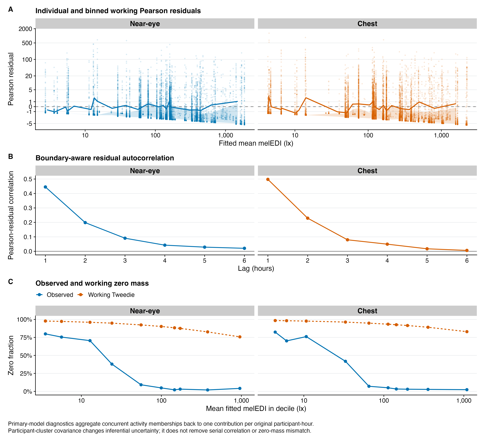
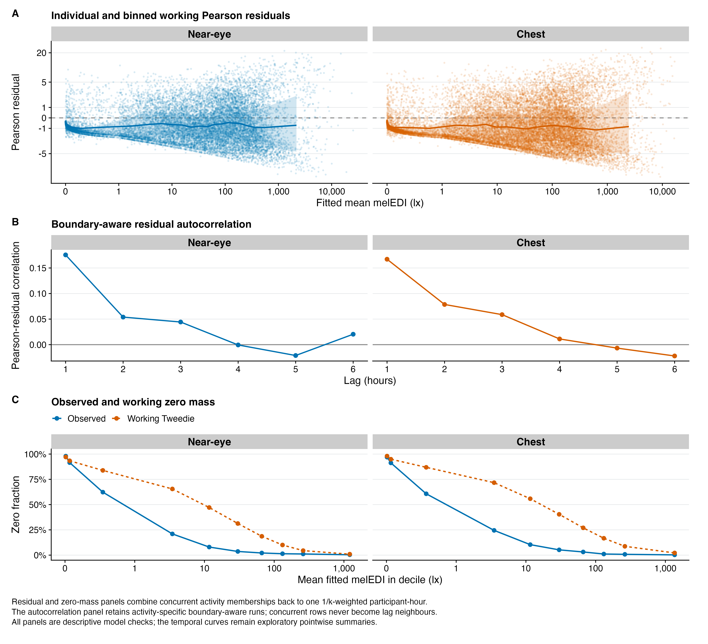

source("scripts/project.R")
analysis_setup()
source("scripts/pipeline/paths_io.R")
source("scripts/pipeline/p_value_display.R")
source("scripts/hypotheses/H04/h04_contract.R")
source("scripts/hypotheses/H04/h04_activity_support.R")
source("scripts/hypotheses/H04/h04_data.R")
source("scripts/hypotheses/H04/h04_modeling.R")
source("scripts/hypotheses/H04/h04_reporting.R")
source("scripts/hypotheses/H04/h04_temporal.R")
root <- normalizePath(Sys.getenv("QUARTO_PROJECT_DIR", unset = getwd()))
producer <- "analyses/H04-activity.qmd"
options(stringsAsFactors = FALSE, scipen = 999, dplyr.summarise.inform = FALSE)
roots <- list(model_data = file.path(root,"results/intermediate/model_data/H04"), models = file.path(root,"results/models/H04"), diagnostics = file.path(root,"results/csv/diagnostics/H04"), tables = file.path(root,"results/tables/H04"), figures = file.path(root,"results/images/H04"), source_data = file.path(root,"results/csv/source_data/H04"))
invisible(lapply(roots, dir.create, recursive=TRUE, showWarnings=FALSE))
h04_write_csv <- function(data, path, id) {
write_csv_artifact(data, path, producer)
invisible(path)
}
h04_write_rds <- function(object, path, id) {
write_rds_artifact(object, path, producer)
invisible(path)
}H04: Self-reported activity and measured personal light exposure
This analysis relates reported activities to hourly melanopic light exposure. Each hour contributes a total weight of one when multiple activities are selected. The named activity contrasts use At home as the reference; Other/unspecified is displayed separately.
Data and model guide
The diary inputs are linked to the hourly light datasets. The response is zero-aware geometric-mean melanopic EDI in each eligible participant-hour. Diary categories combine behaviour and setting. Multi-select hours are expanded to one row per retained category and each receives weight 1/k, where k is the number of retained labels. Each original hour therefore contributes total weight one; expanded rows are not additional observed hours. The sparse Other category is shown descriptively.
The primary model uses a population-mean quasi-Tweedie log-mean specification and participant-cluster-robust covariance. Awake time at home is the reference. A separate activity-by-site interaction allows associations to differ among sites; site-average contrasts give sites equal weight. Support checks distinguish actual participant-hours, weighted hours, participants and site-category overlap.
The code below makes the category transformation, response construction, weights, formulas, restrictions and FDR families explicit. Preprocessing, category weighting, within-participant composition and cluster deletion are separate sensitivities. The exploratory participant random-intercept models quantify represented variation, while the clock-time models describe temporal patterns. Their R² and fitted-pattern allocations are not interchangeable with the primary population-average contrasts. Residual dependence, excess zeros and sparse support qualify interpretation.
The executable sections below write fitted objects to results/models/H04/, reader tables to results/tables/H04/, and the supporting numerical and figure outputs under results/. Start with the calculations below or jump to findings and interpretation.
Setup
The helper functions specify multi-select activity coding, fractional weights, participant-clustered covariance and prediction contrasts.
Prepare and inspect activity samples
Create one record per reported activity per eligible participant-hour, with weight 1/k for k selected activities. Build the same alternative-preprocessing and placement-matched samples used by the sensitivity analyses.
inputs <- h04_load_inputs(root)
frames <- h04_prepare_scenario_frames(inputs, root)
spec <- h04_specification()
formulas <- h04_formula_set()
observed_main <- dplyr::bind_rows(
h04_sample_summary(
frames$main$near_eye,
"main__near_eye",
"primary_dataset",
"Near-eye"
),
h04_sample_summary(
frames$main$chest,
"main__chest",
"primary_dataset",
"Chest"
)
)
stopifnot(
all(observed_main$participants > 0L),
all(observed_main$participant_days >= observed_main$participants),
all(observed_main$long_rows >= observed_main$unique_participant_hours),
all(abs(observed_main$effective_weighted_hours -
observed_main$unique_participant_hours) < 1e-10)
)
observed_main# A tibble: 2 × 11
run_id scenario_id placement participants participant_days
<chr> <chr> <chr> <int> <int>
1 main__near_eye primary_dataset Near-eye 126 724
2 main__chest primary_dataset Chest 150 875
# ℹ 6 more variables: unique_participant_hours <int>, long_rows <int>,
# effective_weighted_hours <dbl>, sites <int>, categories <int>,
# exact_zero_unique_hours <int>Fit the primary and site interaction models
Estimate activity associations with the weighted quasi-Tweedie model and participant-clustered covariance. Check the interaction design for estimability before reporting supported category-by-site contrasts.
message("Fitting primary near-eye and complementary chest mean models")
main_results <- list(
near_eye = h04_fit_additive_run(
frames$main$near_eye,
"main__near_eye",
"primary_dataset",
"Near-eye"
),
chest = h04_fit_additive_run(
frames$main$chest,
"main__chest",
"primary_dataset",
"Chest"
)
)
main_estimands <- dplyr::bind_rows(lapply(main_results, `[[`, "estimands"))
main_tests <- dplyr::bind_rows(lapply(main_results, `[[`, "tests"))
main_diagnostics <- dplyr::bind_rows(lapply(
main_results,
`[[`,
"diagnostics"
))
main_samples <- dplyr::bind_rows(lapply(main_results, `[[`, "sample"))
message("Applying the results-blind named-category heterogeneity check")
heterogeneity <- list(
near_eye = h04_run_heterogeneity_check(
frames$main$near_eye,
"Near-eye",
root
),
chest = h04_run_heterogeneity_check(
frames$main$chest,
"Chest",
root
)
)
heterogeneity_check <- dplyr::bind_rows(lapply(
heterogeneity,
`[[`,
"estimability_check"
))
heterogeneity_tests <- dplyr::bind_rows(lapply(
heterogeneity,
`[[`,
"test"
))
heterogeneity_estimands <- dplyr::bind_rows(
heterogeneity$near_eye$selected$estimands |>
dplyr::mutate(placement = "Near-eye", .before = 1),
heterogeneity$chest$selected$estimands |>
dplyr::mutate(placement = "Chest", .before = 1)
)
main_estimands# A tibble: 12 × 30
run_id scenario_id placement working_power activity_code activity
<chr> <chr> <chr> <dbl> <chr> <chr>
1 main__near_eye primary_dataset Near-eye 1.54 sleeping Sleeping
2 main__near_eye primary_dataset Near-eye 1.54 home At home
3 main__near_eye primary_dataset Near-eye 1.54 road_vehicle On the …
4 main__near_eye primary_dataset Near-eye 1.54 working_indo… Working…
5 main__near_eye primary_dataset Near-eye 1.54 outdoors Outdoors
6 main__near_eye primary_dataset Near-eye 1.54 other Other/u…
7 main__chest primary_dataset Chest 1.54 sleeping Sleeping
8 main__chest primary_dataset Chest 1.54 home At home
9 main__chest primary_dataset Chest 1.54 road_vehicle On the …
10 main__chest primary_dataset Chest 1.54 working_indo… Working…
11 main__chest primary_dataset Chest 1.54 outdoors Outdoors
12 main__chest primary_dataset Chest 1.54 other Other/u…
# ℹ 24 more variables: display_order <int>, model_order <int>,
# standardized_mean_lx <dbl>, mean_conf_low_lx <dbl>,
# mean_conf_high_lx <dbl>, ratio_to_home <dbl>, ratio_conf_low <dbl>,
# ratio_conf_high <dbl>, difference_from_home_lx <dbl>,
# difference_conf_low_lx <dbl>, difference_conf_high_lx <dbl>,
# statistic <dbl>, denominator_df <int>, p_raw <dbl>, inferential_role <chr>,
# unique_participant_hours <int>, long_rows <int>, …heterogeneity_tests# A tibble: 2 × 13
test_id placement selected_architecture null_hypothesis restrictions clusters
<chr> <chr> <chr> <chr> <int> <int>
1 H04-F3 Near-eye five_named all site-by-act… 32 126
2 H04-F3 Chest five_named all site-by-act… 28 150
# ℹ 7 more variables: denominator_df <int>, wald_chisq <dbl>,
# f_statistic <dbl>, p_raw <dbl>, covariance_minimum_eigenvalue <dbl>,
# covariance_condition_number <dbl>, status <chr>Compare preprocessing, weighting and within-participant alternatives
Repeat the model under the declared scientific sensitivities, including one reported activity, multi-select coding alternatives, alternative preprocessing, common sensor hours, working variance assumptions and the within/between participant decomposition.
message("Running the prespecified H04 sensitivity battery")
scenario_frames <- list(
exactly_one_near = frames$exactly_one$near_eye,
exactly_one_chest = frames$exactly_one$chest,
other_retained_near = frames$retain_coselected_other$near_eye,
other_retained_chest = frames$retain_coselected_other$chest,
other_excluded_near = frames$exclude_other_only$near_eye,
other_excluded_chest = frames$exclude_other_only$chest,
unweighted_near = frames$unweighted_long$near_eye,
unweighted_chest = frames$unweighted_long$chest,
gap_near = frames$gap$near_eye,
gap_chest = frames$gap$chest,
paired_near = frames$paired$near_eye,
paired_chest = frames$paired$chest,
main_near = frames$main$near_eye,
main_chest = frames$main$chest,
mundlak_near = h04_add_mundlak_proportions(frames$main$near_eye),
mundlak_chest = h04_add_mundlak_proportions(frames$main$chest)
)
run_registry <- tibble::tribble(
~run_id,
~scenario_id,
~placement,
~frame_id,
~working_power,
"exactly_one__near_eye",
"exactly_one_category",
"Near-eye",
"exactly_one_near",
1.539919,
"exactly_one__chest",
"exactly_one_category",
"Chest",
"exactly_one_chest",
1.539919,
"retain_coselected_other__near_eye",
"retain_coselected_other",
"Near-eye",
"other_retained_near",
1.539919,
"retain_coselected_other__chest",
"retain_coselected_other",
"Chest",
"other_retained_chest",
1.539919,
"exclude_other_only__near_eye",
"exclude_other_only",
"Near-eye",
"other_excluded_near",
1.539919,
"exclude_other_only__chest",
"exclude_other_only",
"Chest",
"other_excluded_chest",
1.539919,
"unweighted_long__near_eye",
"unweighted_long_rows",
"Near-eye",
"unweighted_near",
1.539919,
"unweighted_long__chest",
"unweighted_long_rows",
"Chest",
"unweighted_chest",
1.539919,
"gap_timing_unaware__near_eye",
"gap_timing_unaware",
"Near-eye",
"gap_near",
1.539919,
"gap_timing_unaware__chest",
"gap_timing_unaware",
"Chest",
"gap_chest",
1.539919,
"paired_common__near_eye",
"paired_common_sample",
"Near-eye",
"paired_near",
1.539919,
"paired_common__chest",
"paired_common_sample",
"Chest",
"paired_chest",
1.539919,
"working_power_1_30__near_eye",
"working_power_1_30",
"Near-eye",
"main_near",
1.30,
"working_power_1_30__chest",
"working_power_1_30",
"Chest",
"main_chest",
1.30,
"working_power_1_80__near_eye",
"working_power_1_80",
"Near-eye",
"main_near",
1.80,
"working_power_1_80__chest",
"working_power_1_80",
"Chest",
"main_chest",
1.80
)
run_registry <- dplyr::bind_rows(
run_registry |>
dplyr::mutate(formula_id = "primary_full"),
tibble::tribble(
~run_id,
~scenario_id,
~placement,
~frame_id,
~working_power,
~formula_id,
"mundlak__near_eye",
"mundlak_within_between",
"Near-eye",
"mundlak_near",
spec$working_tweedie_power,
"secondary_mundlak_audit",
"mundlak__chest",
"mundlak_within_between",
"Chest",
"mundlak_chest",
spec$working_tweedie_power,
"secondary_mundlak_audit"
)
)
sensitivity_results <- vector("list", nrow(run_registry))
for (index in seq_len(nrow(run_registry))) {
run <- run_registry[index, , drop = FALSE]
message(" ", run$run_id)
sensitivity_results[[index]] <- h04_fit_additive_run(
scenario_frames[[run$frame_id]],
run$run_id,
run$scenario_id,
run$placement,
working_power = run$working_power,
formula = formulas[[run$formula_id]]
)
}
names(sensitivity_results) <- run_registry$run_id
sensitivity_estimands <- dplyr::bind_rows(lapply(
sensitivity_results,
`[[`,
"estimands"
))
sensitivity_tests <- dplyr::bind_rows(lapply(
sensitivity_results,
`[[`,
"tests"
))
sensitivity_diagnostics <- dplyr::bind_rows(lapply(
sensitivity_results,
`[[`,
"diagnostics"
))
sensitivity_samples <- dplyr::bind_rows(lapply(
sensitivity_results,
`[[`,
"sample"
))
reference_estimands <- main_estimands |>
dplyr::select(
.data$placement,
.data$activity_code,
primary_ratio = .data$ratio_to_home,
primary_conf_low = .data$ratio_conf_low,
primary_conf_high = .data$ratio_conf_high,
primary_p_adjusted = .data$p_adjusted
)
sensitivity_comparison <- sensitivity_estimands |>
dplyr::left_join(
reference_estimands,
by = c("placement", "activity_code"),
relationship = "many-to-one"
) |>
dplyr::mutate(
ratio_relative_change_percent = 100 *
(.data$ratio_to_home / .data$primary_ratio - 1),
direction_concordant = dplyr::if_else(
.data$inferential_role == "NAMED_VERSUS_HOME",
sign(log(.data$ratio_to_home)) == sign(log(.data$primary_ratio)),
NA
),
primary_ratio_inside_sensitivity_interval = .data$primary_ratio >=
.data$ratio_conf_low &
.data$primary_ratio <= .data$ratio_conf_high,
stability = dplyr::case_when(
.data$inferential_role != "NAMED_VERSUS_HOME" ~ "not_in_claim_family",
!is.finite(.data$ratio_to_home) ~ "non_estimable",
.data$direction_concordant &
abs(.data$ratio_relative_change_percent) <= 25 ~
"stable",
.data$direction_concordant ~ "magnitude_shift",
TRUE ~ "direction_shift"
)
)
paired_estimands <- sensitivity_estimands |>
dplyr::filter(.data$scenario_id == "paired_common_sample")
mundlak_between_estimands <- dplyr::bind_rows(
h04_mundlak_between_estimands(
sensitivity_results[["mundlak__near_eye"]]$bundle
) |>
dplyr::mutate(
placement = "Near-eye",
scenario_id = "mundlak_within_between",
.before = 1
),
h04_mundlak_between_estimands(
sensitivity_results[["mundlak__chest"]]$bundle
) |>
dplyr::mutate(
placement = "Chest",
scenario_id = "mundlak_within_between",
.before = 1
)
)
mundlak_between_omnibus <- dplyr::bind_rows(
h04_mundlak_between_omnibus(
sensitivity_results[["mundlak__near_eye"]]$bundle
) |>
dplyr::mutate(
placement = "Near-eye",
scenario_id = "mundlak_within_between",
.before = 1
),
h04_mundlak_between_omnibus(
sensitivity_results[["mundlak__chest"]]$bundle
) |>
dplyr::mutate(
placement = "Chest",
scenario_id = "mundlak_within_between",
.before = 1
)
)
mundlak_support <- dplyr::bind_rows(
h04_mundlak_support(scenario_frames$mundlak_near, "Near-eye"),
h04_mundlak_support(scenario_frames$mundlak_chest, "Chest")
)
sensitivity_comparison# A tibble: 106 × 38
run_id scenario_id placement working_power activity_code activity
<chr> <chr> <chr> <dbl> <chr> <chr>
1 exactly_one__near… exactly_on… Near-eye 1.54 sleeping Sleeping
2 exactly_one__near… exactly_on… Near-eye 1.54 home At home
3 exactly_one__near… exactly_on… Near-eye 1.54 road_vehicle On the …
4 exactly_one__near… exactly_on… Near-eye 1.54 working_indo… Working…
5 exactly_one__near… exactly_on… Near-eye 1.54 outdoors Outdoors
6 exactly_one__near… exactly_on… Near-eye 1.54 other Other/u…
7 exactly_one__chest exactly_on… Chest 1.54 sleeping Sleeping
8 exactly_one__chest exactly_on… Chest 1.54 home At home
9 exactly_one__chest exactly_on… Chest 1.54 road_vehicle On the …
10 exactly_one__chest exactly_on… Chest 1.54 working_indo… Working…
# ℹ 96 more rows
# ℹ 32 more variables: display_order <int>, model_order <int>,
# standardized_mean_lx <dbl>, mean_conf_low_lx <dbl>,
# mean_conf_high_lx <dbl>, ratio_to_home <dbl>, ratio_conf_low <dbl>,
# ratio_conf_high <dbl>, difference_from_home_lx <dbl>,
# difference_conf_low_lx <dbl>, difference_conf_high_lx <dbl>,
# statistic <dbl>, denominator_df <int>, p_raw <dbl>, …Check residuals and influential clusters
Inspect the weighted residuals on the participant-hour scale, then omit sites and high-influence participants. These checks qualify the population-average interpretation.
message("Calculating weighted diagnostics on one row per participant-hour")
cluster_diagnostics <- dplyr::bind_rows(
h04_cluster_diagnostics(main_results$near_eye$bundle) |>
dplyr::mutate(
run_id = "main__near_eye",
placement = "Near-eye",
.before = 1
),
h04_cluster_diagnostics(main_results$chest$bundle) |>
dplyr::mutate(
run_id = "main__chest",
placement = "Chest",
.before = 1
)
)
residual_acf <- dplyr::bind_rows(
h04_residual_acf(main_results$near_eye$bundle) |>
dplyr::mutate(
run_id = "main__near_eye",
placement = "Near-eye",
.before = 1
),
h04_residual_acf(main_results$chest$bundle) |>
dplyr::mutate(
run_id = "main__chest",
placement = "Chest",
.before = 1
)
)
residual_calibration <- dplyr::bind_rows(
h04_residual_calibration(main_results$near_eye$bundle, "main__near_eye") |>
dplyr::mutate(placement = "Near-eye", .after = "run_id"),
h04_residual_calibration(main_results$chest$bundle, "main__chest") |>
dplyr::mutate(placement = "Chest", .after = "run_id")
)
group_calibration <- dplyr::bind_rows(
h04_group_calibration(main_results$near_eye$bundle, "main__near_eye") |>
dplyr::mutate(placement = "Near-eye", .after = "run_id"),
h04_group_calibration(main_results$chest$bundle, "main__chest") |>
dplyr::mutate(placement = "Chest", .after = "run_id")
)
message("Running bounded leave-one-site and top-five participant refits")
influence_jobs <- dplyr::bind_rows(
tidyr::crossing(
placement = "Near-eye",
deletion_type = "site",
deletion_id = levels(main_results$near_eye$bundle$data$site)
),
tidyr::crossing(
placement = "Chest",
deletion_type = "site",
deletion_id = levels(main_results$chest$bundle$data$site)
),
tibble::tibble(
placement = "Near-eye",
deletion_type = "participant",
deletion_id = cluster_diagnostics |>
dplyr::filter(.data$placement == "Near-eye") |>
dplyr::slice_min(.data$score_rank, n = 5L) |>
dplyr::pull(.data$participant)
),
tibble::tibble(
placement = "Chest",
deletion_type = "participant",
deletion_id = cluster_diagnostics |>
dplyr::filter(.data$placement == "Chest") |>
dplyr::slice_min(.data$score_rank, n = 5L) |>
dplyr::pull(.data$participant)
)
)
influence_results <- vector("list", nrow(influence_jobs))
for (index in seq_len(nrow(influence_jobs))) {
job <- influence_jobs[index, , drop = FALSE]
is_near <- job$placement == "Near-eye"
frame <- if (is_near) frames$main$near_eye else frames$main$chest
reduced <- if (job$deletion_type == "site") {
dplyr::filter(frame, as.character(.data$site) != job$deletion_id)
} else {
dplyr::filter(
frame,
as.character(.data$participant) != job$deletion_id
)
}
reduced <- h04_set_analysis_frame(reduced)
run_id <- paste(
"influence",
if (is_near) "near_eye" else "chest",
job$deletion_type,
job$deletion_id,
sep = "__"
)
result <- h04_fit_additive_run(
reduced,
run_id,
paste0("delete_", job$deletion_type),
job$placement
)
reference <- if (is_near) {
main_results$near_eye
} else {
main_results$chest
}
primary_p <- reference$tests |>
dplyr::filter(.data$test_id == "H04-F1") |>
dplyr::pull(.data$p_raw)
deletion_p <- result$tests |>
dplyr::filter(.data$test_id == "H04-F1") |>
dplyr::pull(.data$p_raw)
influence_results[[index]] <- result$estimands |>
dplyr::left_join(
reference$estimands |>
dplyr::select(
.data$activity_code,
full_ratio = .data$ratio_to_home,
full_conf_low = .data$ratio_conf_low,
full_conf_high = .data$ratio_conf_high,
full_p_adjusted = .data$p_adjusted
),
by = "activity_code",
relationship = "one-to-one"
) |>
dplyr::mutate(
deletion_type = job$deletion_type,
deletion_id = job$deletion_id,
full_primary_p = primary_p,
deletion_primary_p = deletion_p,
primary_decision_changed = (primary_p < 0.05) != (deletion_p < 0.05),
ratio_relative_change_percent = 100 *
(.data$ratio_to_home / .data$full_ratio - 1),
.before = 1
)
}
influence_refits <- dplyr::bind_rows(influence_results)
message("Classifying prespecified diagnostic acceptability")
diagnostic_assessments <- dplyr::bind_rows(lapply(
c("Near-eye", "Chest"),
function(placement) {
diagnostic <- dplyr::filter(
main_diagnostics,
.data$placement == .env$placement
)
test <- main_tests |>
dplyr::filter(
.data$placement == .env$placement,
.data$test_id == "H04-F1"
)
frame <- if (placement == "Near-eye") {
frames$main$near_eye
} else {
frames$main$chest
}
weight_check <- frame |>
dplyr::group_by(.data$analysis_hour_id) |>
dplyr::summarise(
weight_sum = sum(.data$analysis_weight),
rows = dplyr::n(),
k = dplyr::first(.data$k),
.groups = "drop"
)
power <- sensitivity_comparison |>
dplyr::filter(
.data$placement == .env$placement,
.data$scenario_id %in% c("working_power_1_30", "working_power_1_80"),
.data$inferential_role == "NAMED_VERSUS_HOME"
)
structural_pass <- diagnostic$converged &&
diagnostic$full_rank &&
diagnostic$finite_coefficients &&
diagnostic$covariance_finite &&
test$status == "ESTIMABLE"
power_stable <- all(power$direction_concordant %in% TRUE) &&
max(abs(power$ratio_relative_change_percent), na.rm = TRUE) <= 25
tibble::tribble(
~placement,
~diagnostic,
~evidence,
~assessment,
~interpretation,
placement,
"Fractional-weight integrity",
sprintf(
"%s hours checked; maximum |sum(weight)-1| = %.3g; rows equal k: %s",
nrow(weight_check),
max(abs(weight_check$weight_sum - 1)),
all(weight_check$rows == weight_check$k)
),
if (
all(abs(weight_check$weight_sum - 1) < 1e-10) &&
all(weight_check$rows == weight_check$k)
)
"ACCEPTABLE" else "NOT ACCEPTABLE",
"Each participant-hour contributes one total unit across retained categories.",
placement,
"IRLS, design, and robust covariance",
sprintf(
"converged=%s; rank=%s/%s; covariance finite=%s; H04-F1 status=%s",
diagnostic$converged,
diagnostic$design_rank,
diagnostic$design_columns,
diagnostic$covariance_finite,
test$status
),
if (structural_pass) "ACCEPTABLE" else "NOT ACCEPTABLE",
"The fitted mean and registered robust restriction are numerically estimable.",
placement,
"Participant-cluster influence",
sprintf(
"maximum score share=%.3f; maximum leverage share=%.3f",
diagnostic$maximum_cluster_score_share,
diagnostic$maximum_cluster_leverage_share
),
if (
diagnostic$maximum_cluster_score_share <= 0.50 &&
diagnostic$maximum_cluster_leverage_share <= 0.20
)
"ACCEPTABLE" else "NOT ACCEPTABLE",
"No participant exceeds the predeclared architecture-check influence limits.",
placement,
"Mean-variance and calibration",
sprintf(
"hour residual-fitted Spearman=%.3f; absolute-residual Spearman=%.3f",
diagnostic$hour_residual_fitted_spearman,
diagnostic$hour_absolute_residual_fitted_spearman
),
"ACCEPTABLE WITH LIMITATION",
paste(
"The quasi mean model is used for robust population-average inference;",
"remaining variance-pattern structure is visible in calibration diagnostics."
),
placement,
"Exact zeros and positive tail",
sprintf(
"%s/%s unique hours are exactly zero (%.1f%%)",
diagnostic$exact_zero_unique_hours,
diagnostic$unique_participant_hours,
100 * diagnostic$exact_zero_fraction
),
"ACCEPTABLE WITH LIMITATION",
paste(
"The zero-aware geometric mean remains in the fit, but the quasi model",
"does not separately model the probability of zero."
),
placement,
"Within-run serial dependence",
sprintf(
"unique-hour Pearson residual lag-1 correlation=%.3f",
diagnostic$hour_residual_lag1_correlation
),
"ACCEPTABLE WITH LIMITATION",
paste(
"Serial correlation remains visible; participant clustering encompasses",
"the complete longitudinal record and is the inferential basis."
),
placement,
"Working variance power",
sprintf(
"p=1.30/1.80: named-contrast directions stable=%s; maximum ratio change=%.1f%%",
all(power$direction_concordant %in% TRUE),
max(abs(power$ratio_relative_change_percent), na.rm = TRUE)
),
if (power_stable) "ACCEPTABLE" else "ACCEPTABLE WITH LIMITATION",
"Fixed power checks do not select the model by H04 significance.",
placement,
"Overall primary mean-model assessment",
sprintf(
"structural checks pass=%s; inference uses %s participant clusters",
structural_pass,
diagnostic$participants
),
if (structural_pass) {
"ACCEPTABLE WITH LIMITATION"
} else {
"NOT ACCEPTABLE"
},
paste(
"The registered mean model is usable for inference, with explicit",
"limitations for zero structure, residual variance, and serial dependence."
)
)
}
))
formula_registry <- tibble::tibble(
formula_id = names(formulas),
formula = vapply(formulas, h04_formula_text, character(1))
)
sample_flow <- dplyr::bind_rows(
h04_sample_flow(frames$preparation_bundles$main_near_eye),
h04_sample_flow(frames$preparation_bundles$main_chest),
h04_gap_sample_flow(frames$preparation_bundles$gap_near_eye),
h04_gap_sample_flow(frames$preparation_bundles$gap_chest)
)
category_support <- dplyr::bind_rows(
h04_category_support(frames$main$near_eye) |>
dplyr::mutate(placement = "Near-eye", .before = 1),
h04_category_support(frames$main$chest) |>
dplyr::mutate(placement = "Chest", .before = 1)
)
cell_support <- dplyr::bind_rows(
h04_site_category_support(frames$main$near_eye, root) |>
dplyr::mutate(placement = "Near-eye", .before = 1),
h04_site_category_support(frames$main$chest, root) |>
dplyr::mutate(placement = "Chest", .before = 1)
)
diagnostic_assessments# A tibble: 16 × 5
placement diagnostic evidence assessment interpretation
<chr> <chr> <chr> <chr> <chr>
1 Near-eye Fractional-weight integrity 16526 h… ACCEPTABLE Each particip…
2 Near-eye IRLS, design, and robust covari… converg… ACCEPTABLE The fitted me…
3 Near-eye Participant-cluster influence maximum… ACCEPTABLE No participan…
4 Near-eye Mean-variance and calibration hour re… ACCEPTABL… The quasi mea…
5 Near-eye Exact zeros and positive tail 4784/16… ACCEPTABL… The zero-awar…
6 Near-eye Within-run serial dependence unique-… ACCEPTABL… Serial correl…
7 Near-eye Working variance power p=1.30/… ACCEPTABLE Fixed power c…
8 Near-eye Overall primary mean-model asse… structu… ACCEPTABL… The registere…
9 Chest Fractional-weight integrity 20128 h… ACCEPTABLE Each particip…
10 Chest IRLS, design, and robust covari… converg… ACCEPTABLE The fitted me…
11 Chest Participant-cluster influence maximum… ACCEPTABLE No participan…
12 Chest Mean-variance and calibration hour re… ACCEPTABL… The quasi mea…
13 Chest Exact zeros and positive tail 5923/20… ACCEPTABL… The zero-awar…
14 Chest Within-run serial dependence unique-… ACCEPTABL… Serial correl…
15 Chest Working variance power p=1.30/… ACCEPTABLE Fixed power c…
16 Chest Overall primary mean-model asse… structu… ACCEPTABL… The registere…Export estimates and diagnostic data
Save fitted models, samples, estimates and exact plot data for subsequent reports.
Export results
h04_write_csv(
h04_multiplicity_registry(),
file.path(roots$model_data, "H04_multiplicity_registry.csv"),
"multiplicity"
)
h04_write_csv(
formula_registry,
file.path(roots$model_data, "H04_formula_registry.csv"),
"formulas"
)
h04_write_csv(
run_registry,
file.path(roots$model_data, "H04_sensitivity_run_registry.csv"),
"run_registry"
)
h04_write_csv(
dplyr::bind_rows(main_samples, sensitivity_samples),
file.path(roots$model_data, "H04_model_frame_index.csv"),
"model_frames_index"
)
h04_write_csv(
sample_flow,
file.path(roots$model_data, "H04_sample_flow.csv"),
"sample_flow"
)
h04_write_csv(
category_support,
file.path(roots$model_data, "H04_category_support.csv"),
"category_support"
)
h04_write_csv(
cell_support,
file.path(roots$model_data, "H04_site_category_support.csv"),
"cell_support"
)
h04_write_rds(
list(
main = frames$main,
paired = frames$paired[c("near_eye", "chest")],
exactly_one = frames$exactly_one,
retain_coselected_other = frames$retain_coselected_other,
exclude_other_only = frames$exclude_other_only,
unweighted_long = frames$unweighted_long,
gap_timing_unaware = frames$gap,
mundlak = list(
near_eye = scenario_frames$mundlak_near,
chest = scenario_frames$mundlak_chest
)
),
file.path(roots$model_data, "H04_model_frames.rds"),
"model_frames"
)
h04_write_rds(
list(
main = lapply(main_results, `[[`, "bundle"),
sensitivities = lapply(sensitivity_results, `[[`, "bundle")
),
file.path(roots$models, "H04_additive_model_objects.rds"),
"additive_models"
)
h04_write_rds(
heterogeneity,
file.path(roots$models, "H04_heterogeneity_model_objects.rds"),
"heterogeneity_models"
)
h04_write_csv(
dplyr::bind_rows(main_diagnostics, sensitivity_diagnostics),
file.path(roots$diagnostics, "H04_model_diagnostics.csv"),
"model_diagnostics"
)
h04_write_csv(
diagnostic_assessments,
file.path(roots$diagnostics, "H04_diagnostic_assessments.csv"),
"diagnostic_assessments"
)
h04_write_csv(
mundlak_support,
file.path(roots$diagnostics, "H04_mundlak_activity_support.csv"),
"mundlak_support"
)
h04_write_csv(
cluster_diagnostics,
file.path(roots$diagnostics, "H04_cluster_influence_scores.csv"),
"cluster_diagnostics"
)
h04_write_csv(
residual_acf,
file.path(roots$diagnostics, "H04_primary_residual_acf.csv"),
"residual_acf"
)
h04_write_csv(
residual_calibration,
file.path(roots$diagnostics, "H04_residual_calibration_bins.csv"),
"residual_calibration"
)
h04_write_csv(
group_calibration,
file.path(roots$diagnostics, "H04_group_calibration.csv"),
"group_calibration"
)
h04_write_csv(
heterogeneity_check,
file.path(roots$diagnostics, "H04_heterogeneity_architecture_check.csv"),
"heterogeneity_check"
)
h04_write_csv(
influence_jobs,
file.path(roots$diagnostics, "H04_influence_refit_registry.csv"),
"influence_registry"
)
h04_write_csv(
main_estimands,
file.path(roots$tables, "H04_primary_category_estimands.csv"),
"primary_estimands"
)
h04_write_csv(
dplyr::bind_rows(main_estimands, sensitivity_estimands),
file.path(roots$tables, "H04_all_category_estimands.csv"),
"all_estimands"
)
h04_write_csv(
dplyr::bind_rows(main_tests, heterogeneity_tests),
file.path(roots$tables, "H04_primary_and_heterogeneity_tests.csv"),
"primary_tests"
)
h04_write_csv(
sensitivity_tests,
file.path(roots$tables, "H04_sensitivity_omnibus_tests.csv"),
"sensitivity_tests"
)
h04_write_csv(
sensitivity_comparison,
file.path(roots$tables, "H04_sensitivity_comparison.csv"),
"sensitivity_comparison"
)
h04_write_csv(
mundlak_between_estimands,
file.path(
roots$tables,
"H04_mundlak_between_participant_estimands.csv"
),
"mundlak_between_estimands"
)
h04_write_csv(
mundlak_between_omnibus,
file.path(
roots$tables,
"H04_mundlak_between_participant_omnibus.csv"
),
"mundlak_between_omnibus"
)
h04_write_csv(
paired_estimands,
file.path(roots$tables, "H04_paired_placement_estimands.csv"),
"paired_estimands"
)
h04_write_csv(
heterogeneity_estimands,
file.path(roots$tables, "H04_site_activity_estimands.csv"),
"site_activity_estimands"
)
h04_write_csv(
influence_refits,
file.path(roots$tables, "H04_influence_category_refits.csv"),
"influence_refits"
)
message("Creating durable source data and publication-scale figures")
h04_write_csv(
main_estimands,
file.path(roots$source_data, "H04_primary_category_figure.csv"),
"primary_figure_source"
)
h04_write_csv(
heterogeneity_estimands,
file.path(roots$source_data, "H04_site_activity_figure.csv"),
"site_activity_figure_source"
)
h04_write_csv(
paired_estimands,
file.path(roots$source_data, "H04_paired_placement_figure.csv"),
"paired_figure_source"
)
h04_write_csv(
residual_calibration,
file.path(roots$source_data, "H04_diagnostic_calibration_figure.csv"),
"diagnostic_calibration_source"
)
h04_write_csv(
residual_acf,
file.path(roots$source_data, "H04_diagnostic_acf_figure.csv"),
"diagnostic_acf_source"
)
h04_save_plot(
h04_primary_figure(main_estimands),
"H04_primary_category_estimates",
roots$figures,
width = 12.5,
height = 9.5,
producer = producer
)$png
$png$path
[1] "/Users/zauner/Projects/ZaunerEtAl_reproducible_NH/results/images/H04/H04_primary_category_estimates.png"
$png$bytes
[1] 214422
$png$producer
[1] "analyses/H04-activity.qmd"
$png$r_version
[1] "4.6.1"
$png$written_utc
[1] "2026-09-22 12:57:41 UTC"
$pdf
$pdf$path
[1] "/Users/zauner/Projects/ZaunerEtAl_reproducible_NH/results/images/H04/H04_primary_category_estimates.pdf"
$pdf$bytes
[1] 7592
$pdf$producer
[1] "analyses/H04-activity.qmd"
$pdf$r_version
[1] "4.6.1"
$pdf$written_utc
[1] "2026-09-22 12:57:41 UTC"
$svg
$svg$path
[1] "/Users/zauner/Projects/ZaunerEtAl_reproducible_NH/results/images/H04/H04_primary_category_estimates.svg"
$svg$bytes
[1] 21103
$svg$producer
[1] "analyses/H04-activity.qmd"
$svg$r_version
[1] "4.6.1"
$svg$written_utc
[1] "2026-09-22 12:57:41 UTC"Export results
h04_save_plot(
h04_site_activity_figure(heterogeneity_estimands),
"H04_site_activity_estimates",
roots$figures,
width = 16,
height = 9.5,
producer = producer
)$png
$png$path
[1] "/Users/zauner/Projects/ZaunerEtAl_reproducible_NH/results/images/H04/H04_site_activity_estimates.png"
$png$bytes
[1] 372150
$png$producer
[1] "analyses/H04-activity.qmd"
$png$r_version
[1] "4.6.1"
$png$written_utc
[1] "2026-09-22 12:57:42 UTC"
$pdf
$pdf$path
[1] "/Users/zauner/Projects/ZaunerEtAl_reproducible_NH/results/images/H04/H04_site_activity_estimates.pdf"
$pdf$bytes
[1] 14042
$pdf$producer
[1] "analyses/H04-activity.qmd"
$pdf$r_version
[1] "4.6.1"
$pdf$written_utc
[1] "2026-09-22 12:57:42 UTC"
$svg
$svg$path
[1] "/Users/zauner/Projects/ZaunerEtAl_reproducible_NH/results/images/H04/H04_site_activity_estimates.svg"
$svg$bytes
[1] 72692
$svg$producer
[1] "analyses/H04-activity.qmd"
$svg$r_version
[1] "4.6.1"
$svg$written_utc
[1] "2026-09-22 12:57:42 UTC"Export results
h04_save_plot(
h04_paired_figure(paired_estimands),
"H04_paired_placement_comparison",
roots$figures,
width = 9.5,
height = 5.8,
producer = producer
)$png
$png$path
[1] "/Users/zauner/Projects/ZaunerEtAl_reproducible_NH/results/images/H04/H04_paired_placement_comparison.png"
$png$bytes
[1] 128196
$png$producer
[1] "analyses/H04-activity.qmd"
$png$r_version
[1] "4.6.1"
$png$written_utc
[1] "2026-09-22 12:57:42 UTC"
$pdf
$pdf$path
[1] "/Users/zauner/Projects/ZaunerEtAl_reproducible_NH/results/images/H04/H04_paired_placement_comparison.pdf"
$pdf$bytes
[1] 5561
$pdf$producer
[1] "analyses/H04-activity.qmd"
$pdf$r_version
[1] "4.6.1"
$pdf$written_utc
[1] "2026-09-22 12:57:42 UTC"
$svg
$svg$path
[1] "/Users/zauner/Projects/ZaunerEtAl_reproducible_NH/results/images/H04/H04_paired_placement_comparison.svg"
$svg$bytes
[1] 10673
$svg$producer
[1] "analyses/H04-activity.qmd"
$svg$r_version
[1] "4.6.1"
$svg$written_utc
[1] "2026-09-22 12:57:42 UTC"Export results
h04_save_plot(
h04_diagnostic_figure(residual_calibration, residual_acf),
"H04_primary_diagnostics",
roots$figures,
width = 13,
height = 5.8,
producer = producer
)$png
$png$path
[1] "/Users/zauner/Projects/ZaunerEtAl_reproducible_NH/results/images/H04/H04_primary_diagnostics.png"
$png$bytes
[1] 197258
$png$producer
[1] "analyses/H04-activity.qmd"
$png$r_version
[1] "4.6.1"
$png$written_utc
[1] "2026-09-22 12:57:43 UTC"
$pdf
$pdf$path
[1] "/Users/zauner/Projects/ZaunerEtAl_reproducible_NH/results/images/H04/H04_primary_diagnostics.pdf"
$pdf$bytes
[1] 8305
$pdf$producer
[1] "analyses/H04-activity.qmd"
$pdf$r_version
[1] "4.6.1"
$pdf$written_utc
[1] "2026-09-22 12:57:43 UTC"
$svg
$svg$path
[1] "/Users/zauner/Projects/ZaunerEtAl_reproducible_NH/results/images/H04/H04_primary_diagnostics.svg"
$svg$bytes
[1] 17896
$svg$producer
[1] "analyses/H04-activity.qmd"
$svg$r_version
[1] "4.6.1"
$svg$written_utc
[1] "2026-09-22 12:57:43 UTC"Exploratory participant heterogeneity
Fit weighted auxiliary random-intercept models for both sensor placements. Separate fixed-effect and participant contributions and report the variance decomposition with its distributional assumptions.
working_power <- h04_specification()$working_tweedie_power
fitted_model_path <- file.path(
roots$models,
"H04_heterogeneity_model_objects.rds"
)
model_formulas <- list(
intercept = stats::as.formula(
"geo_medi_1h ~ 1 + (1 | participant)"
),
site = stats::as.formula(
"geo_medi_1h ~ site + (1 | participant)"
),
activity = stats::as.formula(
"geo_medi_1h ~ activity_named + (1 | participant)"
),
additive = stats::as.formula(
"geo_medi_1h ~ site + activity_named + (1 | participant)"
),
full = stats::as.formula(
"geo_medi_1h ~ site * activity_named + (1 | participant)"
)
)
model_formulas <- lapply(model_formulas, function(formula) {
environment(formula) <- environment()
formula
})
h04_fractional_frequency_variance <- function(value, weight) {
if (
length(value) != length(weight) ||
any(!is.finite(value)) ||
any(!is.finite(weight)) ||
any(weight <= 0) ||
sum(weight) <= 1
) {
h04_abort("Invalid values supplied to weighted fixed-predictor variance")
}
centre <- stats::weighted.mean(value, weight)
sum(weight * (value - centre)^2) / (sum(weight) - 1)
}
h04_mixed_r_squared <- function(fit, null_fit, weight) {
variance <- insight::get_variance(
fit,
null_model = null_fit,
approximation = "lognormal"
)
required <- c("var.fixed", "var.random", "var.residual")
if (!all(required %in% names(variance))) {
h04_abort("Could not recover the mixed-model variance components")
}
fixed_matrix <- lme4::getME(fit, "X")
fixed_coefficients <- unname(glmmTMB::fixef(fit)$cond)
if (ncol(fixed_matrix) != length(fixed_coefficients)) {
h04_abort("Fixed design and coefficient dimensions do not agree")
}
fixed_predictor <- as.vector(fixed_matrix %*% fixed_coefficients)
fixed_weighted <- h04_fractional_frequency_variance(
fixed_predictor,
weight
)
random <- as.numeric(variance$var.random)
residual <- as.numeric(variance$var.residual)
total <- fixed_weighted + random + residual
conventional <- performance::r2_nakagawa(
fit,
null_model = null_fit,
approximation = "lognormal"
)
if (
any(!is.finite(c(fixed_weighted, random, residual, total))) ||
total <= 0 ||
is.null(conventional$R2_marginal) ||
is.null(conventional$R2_conditional)
) {
h04_abort("The mixed-model R-squared calculation returned invalid values")
}
list(
marginal = fixed_weighted / total,
conditional = (fixed_weighted + random) / total,
fixed_weighted = fixed_weighted,
random = random,
residual = residual,
conventional_marginal = as.numeric(conventional$R2_marginal[[1L]]),
conventional_conditional = as.numeric(
conventional$R2_conditional[[1L]]
),
conventional_fixed = as.numeric(variance$var.fixed)
)
}
h04_fit_auxiliary_model <- function(model_id, formula, data) {
message("Fitting auxiliary H04 model: ", model_id)
elapsed <- system.time({
captured <- h04_capture_warnings(glmmTMB::glmmTMB(
formula = formula,
data = data,
family = glmmTMB::tweedie(link = "log"),
weights = analysis_weight,
REML = FALSE,
start = list(psi = stats::qlogis(working_power - 1)),
map = list(psi = factor(NA))
))
})
list(
model_id = model_id,
formula = formula,
fit = captured$value,
warnings = captured$warnings,
elapsed_fit_seconds = unname(elapsed[["elapsed"]])
)
}
h04_boundary_lag_correlation <- function(residual, ar_start, lag = 1L) {
sequence_id <- cumsum(ar_start)
index <- seq_along(residual)
earlier <- index - lag
eligible <- earlier >= 1L
eligible[eligible] <- sequence_id[index[eligible]] ==
sequence_id[earlier[eligible]]
complete <- eligible &
is.finite(residual) &
is.finite(residual[pmax(earlier, 1L)])
if (sum(complete) < 3L) {
return(c(correlation = NA_real_, pairs = sum(complete)))
}
c(
correlation = stats::cor(
residual[index[complete]],
residual[earlier[complete]]
),
pairs = sum(complete)
)
}
h04_hour_level_diagnostics <- function(fit, data) {
pearson <- stats::residuals(fit, type = "pearson")
fitted_mean <- stats::fitted(fit)
dispersion <- stats::sigma(fit)
fitted_power <- unname(glmmTMB::family_params(fit)[[1L]])
lambda <- fitted_mean^(2 - fitted_power) /
(dispersion * (2 - fitted_power))
row_zero_probability <- exp(-lambda)
hour_values <- data |>
dplyr::mutate(
.pearson = pearson,
.fitted = fitted_mean,
.zero_probability = row_zero_probability
) |>
dplyr::group_by(.data$analysis_hour_id) |>
dplyr::summarise(
pearson = stats::weighted.mean(.data$.pearson, .data$analysis_weight),
fitted = stats::weighted.mean(.data$.fitted, .data$analysis_weight),
zero_probability = stats::weighted.mean(
.data$.zero_probability,
.data$analysis_weight
),
observed_zero = dplyr::first(.data$geo_medi_1h) == 0,
weight_sum = sum(.data$analysis_weight),
.groups = "drop"
)
sequence <- h04_add_unique_hour_sequences(data) |>
dplyr::select("analysis_hour_id", "AR_start") |>
dplyr::left_join(
hour_values,
by = "analysis_hour_id",
relationship = "one-to-one"
)
if (
any(!is.finite(sequence$pearson)) ||
any(!is.finite(sequence$fitted)) ||
any(!is.finite(sequence$zero_probability)) ||
any(abs(sequence$weight_sum - 1) > 1e-10)
) {
h04_abort("Hour-level mixed-model diagnostics failed their weight check")
}
lag_one <- h04_boundary_lag_correlation(
sequence$pearson,
sequence$AR_start,
lag = 1L
)
list(
pearson = sequence$pearson,
fitted = sequence$fitted,
zero_probability = sequence$zero_probability,
observed_zero = sequence$observed_zero,
lag_one = lag_one,
fitted_power = fitted_power,
dispersion = dispersion
)
}
message("Reading the fitted H04 heterogeneity model frames")
fitted_placements <- readRDS(fitted_model_path)
placement_contract <- list(
near_eye = list(label = "Near-eye"),
chest = list(label = "Chest")
)
assessment <- lapply(names(placement_contract), function(placement_id) {
contract <- placement_contract[[placement_id]]
selected <- fitted_placements[[placement_id]]$selected
if (
is.null(selected$bundle$data) ||
!identical(selected$estimability_check$architecture[[1L]], "five_named")
) {
h04_abort("Missing selected five-category heterogeneity frame for %s", contract$label)
}
data <- selected$bundle$data |>
dplyr::arrange(
.data$site,
.data$participant,
.data$participant_day,
.data$interval_start_utc,
.data$activity_named
) |>
h04_prepare_fit_factors(model_formulas$full)
hour_weights <- data |>
dplyr::group_by(.data$analysis_hour_id) |>
dplyr::summarise(
rows = dplyr::n(),
weight_sum = sum(.data$analysis_weight),
exact_fraction = all(abs(.data$analysis_weight - 1 / dplyr::n()) < 1e-12),
.groups = "drop"
)
if (
nrow(data) != nrow(selected$bundle$data) ||
dplyr::n_distinct(data$analysis_hour_id) !=
dplyr::n_distinct(selected$bundle$data$analysis_hour_id) ||
nlevels(data$participant) !=
dplyr::n_distinct(selected$bundle$data$participant) ||
nlevels(data$activity_named) != 5L ||
anyDuplicated(data[c("analysis_hour_id", "activity_named")]) ||
any(abs(hour_weights$weight_sum - 1) > 1e-12) ||
!all(hour_weights$exact_fraction) ||
abs(sum(data$analysis_weight) - nrow(hour_weights)) > 1e-8
) {
h04_abort("The selected %s mixed-model frame failed its contract", contract$label)
}
nested_models <- Map(
h04_fit_auxiliary_model,
names(model_formulas),
model_formulas,
MoreArgs = list(data = data)
)
names(nested_models) <- names(model_formulas)
null_fit <- nested_models$intercept$fit
nested_model_summaries <- lapply(nested_models, function(item) {
r_squared <- h04_mixed_r_squared(
item$fit,
null_fit,
data$analysis_weight
)
gradient <- if (!is.null(item$fit$sdr$gradient.fixed)) {
max(abs(item$fit$sdr$gradient.fixed))
} else {
NA_real_
}
tibble::tibble(
placement = contract$label,
model_id = item$model_id,
formula = paste(deparse(item$formula), collapse = " "),
marginal_r_squared = r_squared$marginal,
conditional_r_squared = r_squared$conditional,
fixed_effect_variance_weighted = r_squared$fixed_weighted,
participant_intercept_variance = r_squared$random,
distribution_specific_variance = r_squared$residual,
conventional_unweighted_row_marginal_r_squared =
r_squared$conventional_marginal,
conventional_unweighted_row_conditional_r_squared =
r_squared$conventional_conditional,
conventional_unweighted_row_fixed_effect_variance =
r_squared$conventional_fixed,
convergence_code = as.integer(item$fit$fit$convergence),
converged = identical(as.integer(item$fit$fit$convergence), 0L) &&
isTRUE(item$fit$sdr$pdHess),
warning_count = length(item$warnings),
warnings = paste(item$warnings, collapse = " | "),
positive_definite_hessian = isTRUE(item$fit$sdr$pdHess),
maximum_absolute_gradient = gradient,
singular = isTRUE(performance::check_singularity(item$fit)),
log_likelihood = as.numeric(stats::logLik(item$fit)),
aic = stats::AIC(item$fit),
elapsed_fit_seconds = item$elapsed_fit_seconds
)
}) |>
dplyr::bind_rows()
model_values <- stats::setNames(
nested_model_summaries$marginal_r_squared,
nested_model_summaries$model_id
)
site_shapley <- 0.5 * (
(model_values[["site"]] - model_values[["intercept"]]) +
(model_values[["additive"]] - model_values[["activity"]])
)
activity_shapley <- 0.5 * (
(model_values[["activity"]] - model_values[["intercept"]]) +
(model_values[["additive"]] - model_values[["site"]])
)
interaction_shapley <-
model_values[["full"]] - model_values[["additive"]]
component_r_squared <- c(
site_shapley,
activity_shapley,
interaction_shapley
)
allocated <- sum(component_r_squared)
target <- model_values[["full"]] - model_values[["intercept"]]
efficiency_error <- allocated - target
shapley <- tibble::tibble(
placement = contract$label,
component_id = c("site", "activity", "site_by_activity"),
component = c(
"Study site",
"Activity category",
"Study site × activity category"
),
marginal_r_squared_component = component_r_squared,
share_of_full_marginal_r_squared_percent = 100 *
component_r_squared / model_values[["full"]],
full_marginal_r_squared = model_values[["full"]],
null_marginal_r_squared = model_values[["intercept"]],
allocated_marginal_r_squared = allocated,
shapley_efficiency_error = efficiency_error,
allocation_definition = paste(
"hierarchy-respecting Shapley/dominance allocation of 1/k-weighted",
"Nakagawa marginal R-squared across refitted nested models; study",
"site and activity category are averaged over both admissible entry",
"orders; the interaction enters only after both main effects"
),
reference_invariance = paste(
"nested-model value function; invariant to factor reference levels"
),
uncertainty = "point estimates; no bootstrap intervals",
inferential_role = paste(
"exploratory descriptive allocation; not a unique or causal",
"partition and does not replace the selected H04 population-mean model"
)
)
full_row <- nested_model_summaries |>
dplyr::filter(.data$model_id == "full")
fit <- nested_models$full$fit
diagnostics <- h04_hour_level_diagnostics(fit, data)
participant_variance <- full_row$participant_intercept_variance[[1L]]
participant_sd <- sqrt(participant_variance)
total_variance <- with(
full_row,
fixed_effect_variance_weighted + participant_intercept_variance +
distribution_specific_variance
)
summary <- tibble::tibble(
run_id = paste0(
"participant_random_intercept__",
placement_id
),
placement = contract$label,
formula = paste(deparse(model_formulas$full), collapse = " "),
family = "glmmTMB Tweedie",
link = "log",
fitting_method = "maximum likelihood",
long_rows = nrow(data),
unique_participant_hours = dplyr::n_distinct(data$analysis_hour_id),
effective_weighted_hours = sum(data$analysis_weight),
participants = nlevels(data$participant),
participant_days = nlevels(data$participant_day),
sites = nlevels(data$site),
activity_categories = nlevels(data$activity_named),
working_power_fixed = working_power,
marginal_r_squared = full_row$marginal_r_squared,
conditional_r_squared = full_row$conditional_r_squared,
participant_r_squared_increment =
full_row$conditional_r_squared - full_row$marginal_r_squared,
residual_variance_share =
full_row$distribution_specific_variance / total_variance,
adjusted_participant_icc = participant_variance /
(participant_variance + full_row$distribution_specific_variance),
unadjusted_participant_icc = participant_variance / total_variance,
fixed_effect_variance_weighted = full_row$fixed_effect_variance_weighted,
participant_intercept_variance = participant_variance,
distribution_specific_variance =
full_row$distribution_specific_variance,
participant_to_fixed_variance_ratio = participant_variance /
full_row$fixed_effect_variance_weighted,
participant_intercept_sd_log = participant_sd,
participant_factor_per_sd = exp(participant_sd),
conventional_unweighted_row_marginal_r_squared =
full_row$conventional_unweighted_row_marginal_r_squared,
conventional_unweighted_row_conditional_r_squared =
full_row$conventional_unweighted_row_conditional_r_squared,
marginal_r_squared_weighting_difference =
full_row$marginal_r_squared -
full_row$conventional_unweighted_row_marginal_r_squared,
conditional_r_squared_weighting_difference =
full_row$conditional_r_squared -
full_row$conventional_unweighted_row_conditional_r_squared,
r_squared_approximation = paste(
"H03 Nakagawa lognormal distribution-specific variance convention",
"with the fixed linear-predictor sample variance weighted by exact 1/k",
"fractional-frequency weights"
),
weighting_role = paste(
"every retained participant-hour sums to one; the conventional",
"unweighted expanded-row result is retained only as a cross-check"
),
uncertainty = "point estimates; no bootstrap intervals",
inferential_role = paste(
"exploratory participant random-intercept variance assessment;",
"does not replace the selected H04 population-mean quasi-Tweedie model"
)
)
full_warnings <- nested_models$full$warnings
diagnostic_row <- tibble::tibble(
run_id = summary$run_id,
placement = contract$label,
convergence_code = as.integer(fit$fit$convergence),
convergence_message = as.character(fit$fit$message),
converged = identical(as.integer(fit$fit$convergence), 0L) &&
isTRUE(fit$sdr$pdHess),
warning_count = length(full_warnings),
warnings = paste(full_warnings, collapse = " | "),
positive_definite_hessian = isTRUE(fit$sdr$pdHess),
maximum_absolute_gradient = if (!is.null(fit$sdr$gradient.fixed)) {
max(abs(fit$sdr$gradient.fixed))
} else {
NA_real_
},
singular = isTRUE(performance::check_singularity(fit)),
finite_fixed_coefficients = all(is.finite(glmmTMB::fixef(fit)$cond)),
finite_participant_variance = is.finite(participant_variance) &&
participant_variance > 0,
tweedie_power = diagnostics$fitted_power,
dispersion = diagnostics$dispersion,
log_likelihood = as.numeric(stats::logLik(fit)),
aic = stats::AIC(fit),
long_rows = nrow(data),
unique_participant_hours = nrow(diagnostics$pearson),
effective_weighted_hours = sum(data$analysis_weight),
minimum_hour_weight_sum = min(hour_weights$weight_sum),
maximum_hour_weight_sum = max(hour_weights$weight_sum),
pearson_mean_hour_aggregated = mean(diagnostics$pearson),
pearson_sd_hour_aggregated = stats::sd(diagnostics$pearson),
pearson_q01_hour_aggregated = unname(stats::quantile(
diagnostics$pearson,
0.01
)),
pearson_q99_hour_aggregated = unname(stats::quantile(
diagnostics$pearson,
0.99
)),
absolute_residual_fitted_spearman_hour_aggregated = stats::cor(
abs(diagnostics$pearson),
diagnostics$fitted,
method = "spearman"
),
lag1_pearson_residual_correlation_hour_aggregated = unname(
diagnostics$lag_one[["correlation"]]
),
lag1_pairs = as.integer(diagnostics$lag_one[["pairs"]]),
observed_zero_fraction = mean(diagnostics$observed_zero),
tweedie_implied_zero_fraction = mean(diagnostics$zero_probability),
observed_minus_implied_zero_fraction =
mean(diagnostics$observed_zero) -
mean(diagnostics$zero_probability),
fitted_minimum_lx_hour_aggregated = min(diagnostics$fitted),
fitted_median_lx_hour_aggregated = stats::median(diagnostics$fitted),
fitted_maximum_lx_hour_aggregated = max(diagnostics$fitted),
diagnostic_role = paste(
"numerical and working-distribution checks for the exploratory",
"variance assessment; concurrent memberships are aggregated to one",
"weighted residual per participant-hour; no simulation"
)
)
if (
any(!nested_model_summaries$converged) ||
any(nested_model_summaries$warning_count != 0L) ||
any(!nested_model_summaries$positive_definite_hessian) ||
any(nested_model_summaries$singular) ||
any(!is.finite(nested_model_summaries$maximum_absolute_gradient)) ||
abs(model_values[["intercept"]]) > 1e-10 ||
abs(efficiency_error) > 1e-10 ||
!isTRUE(diagnostic_row$finite_fixed_coefficients[[1L]]) ||
!isTRUE(diagnostic_row$finite_participant_variance[[1L]]) ||
summary$conditional_r_squared < summary$marginal_r_squared ||
abs(
summary$marginal_r_squared +
summary$participant_r_squared_increment +
summary$residual_variance_share - 1
) > 1e-10
) {
h04_abort(
"Auxiliary participant random-intercept assessment failed for %s",
contract$label
)
}
list(
placement_id = placement_id,
placement = contract$label,
data = data,
formula = model_formulas$full,
family = "glmmTMB Tweedie with log link",
working_power = working_power,
fit = fit,
nested_models = lapply(nested_models, `[[`, "fit"),
nested_model_formulas = model_formulas,
nested_model_warnings = lapply(nested_models, `[[`, "warnings"),
nested_model_elapsed_fit_seconds = vapply(
nested_models,
`[[`,
numeric(1L),
"elapsed_fit_seconds"
),
summary = summary,
diagnostics = diagnostic_row,
nested_model_summaries = nested_model_summaries,
shapley = shapley
)
})
names(assessment) <- names(placement_contract)
summary_data <- dplyr::bind_rows(lapply(assessment, `[[`, "summary"))
diagnostics <- dplyr::bind_rows(lapply(assessment, `[[`, "diagnostics"))
nested_model_summaries <- dplyr::bind_rows(lapply(
assessment,
`[[`,
"nested_model_summaries"
))
shapley <- dplyr::bind_rows(lapply(assessment, `[[`, "shapley"))
model_object <- list(
assessment = lapply(assessment, function(item) {
item[c(
"placement_id", "placement", "data", "formula", "family",
"working_power", "fit", "nested_models", "nested_model_formulas",
"nested_model_warnings", "nested_model_elapsed_fit_seconds"
)]
}),
input_path = normalizePath(
fitted_model_path,
winslash = "/",
mustWork = TRUE
),
weighting_convention = summary_data$r_squared_approximation[[1L]],
inferential_role = summary_data$inferential_role[[1L]]
)
write_rds_artifact(
model_object,
file.path(
roots$models,
"H04_participant_random_intercept_assessment.rds"
),
producer
)
write_csv_artifact(
summary_data,
file.path(
roots$tables,
"H04_participant_random_intercept_summary.csv"
),
producer
)
write_csv_artifact(
shapley,
file.path(
roots$tables,
"H04_participant_random_intercept_marginal_r2_shapley.csv"
),
producer
)
write_csv_artifact(
diagnostics,
file.path(
roots$diagnostics,
"H04_participant_random_intercept_diagnostics.csv"
),
producer
)
write_csv_artifact(
nested_model_summaries,
file.path(
roots$diagnostics,
"H04_participant_random_intercept_shapley_models.csv"
),
producer
)
summary_data# A tibble: 2 × 34
run_id placement formula family link fitting_method long_rows
<chr> <chr> <chr> <chr> <chr> <chr> <int>
1 participant_random_in… Near-eye geo_me… glmmT… log maximum likel… 16875
2 participant_random_in… Chest geo_me… glmmT… log maximum likel… 20440
# ℹ 27 more variables: unique_participant_hours <int>,
# effective_weighted_hours <dbl>, participants <int>, participant_days <int>,
# sites <int>, activity_categories <int>, working_power_fixed <dbl>,
# marginal_r_squared <dbl>, conditional_r_squared <dbl>,
# participant_r_squared_increment <dbl>, residual_variance_share <dbl>,
# adjusted_participant_icc <dbl>, unadjusted_participant_icc <dbl>,
# fixed_effect_variance_weighted <dbl>, …shapley# A tibble: 6 × 13
placement component_id component marginal_r_squared_c…¹ share_of_full_margin…²
<chr> <chr> <chr> <dbl> <dbl>
1 Near-eye site Study si… 0.0955 12.5
2 Near-eye activity Activity… 0.618 80.7
3 Near-eye site_by_act… Study si… 0.0525 6.85
4 Chest site Study si… 0.0452 5.89
5 Chest activity Activity… 0.661 86.1
6 Chest site_by_act… Study si… 0.0615 8.01
# ℹ abbreviated names: ¹marginal_r_squared_component,
# ²share_of_full_marginal_r_squared_percent
# ℹ 8 more variables: full_marginal_r_squared <dbl>,
# null_marginal_r_squared <dbl>, allocated_marginal_r_squared <dbl>,
# shapley_efficiency_error <dbl>, allocation_definition <chr>,
# reference_invariance <chr>, uncertainty <chr>, inferential_role <chr>Explore clock-time patterns
Fit cyclic global time patterns with activity and site deviations and participant random intercepts. Estimate residual autocorrelation before the final fit. The uncertainty shown is model-based and pointwise; no bootstrap or curve-wide inference is used.
frame_path <- file.path(roots$model_data, "H04_model_frames.rds")
if (!file.exists(frame_path)) {
h04_abort("Run the H04 mean-model pipeline before temporal fitting")
}
frames <- readRDS(frame_path)$main
placement_registry <- list(
near_eye = list(
placement = "Near-eye",
frame = frames$near_eye,
id = "near_eye"
),
chest = list(
placement = "Chest",
frame = frames$chest,
id = "chest"
)
)
requested <- c("near_eye","chest")
h04_fit_and_save_temporal <- function(entry, formula_id) {
object <- h04_fit_temporal_model(entry$frame, entry$placement, formula_id)
write_rds_artifact(object,file.path(roots$models,paste0("H04_",formula_id,"_",entry$id,".rds")),producer)
object
}
basis_contract <- h04_temporal_basis_contract()
stopifnot(
basis_contract$marginal_basis[
basis_contract$component == "activity deviation"
] ==
"tp.smooth.spec / tprs.smooth",
basis_contract$marginal_basis[basis_contract$component == "site deviation"] ==
"tp.smooth.spec / tprs.smooth",
basis_contract$cyclic[basis_contract$component == "global time"],
!basis_contract$cyclic[basis_contract$component == "activity deviation"],
!basis_contract$cyclic[basis_contract$component == "site deviation"]
)
objects <- list()
summaries <- list()
comparisons <- list()
smooth_tables <- list()
k_checks <- list()
concurvity <- list()
acf <- list()
run_diagnostics <- list()
cluster_diagnostics <- list()
activity_endpoints <- list()
site_endpoints <- list()
global_endpoints <- list()
curves <- list()
support <- list()
retention <- list()
uncertainty <- list()
for (id in requested) {
entry <- placement_registry[[id]]
activity <- h04_fit_and_save_temporal(entry, "temporal_activity_long")
no_activity <- h04_fit_and_save_temporal(entry, "temporal_no_activity")
objects[[id]] <- list(activity = activity, no_activity = no_activity)
activity_summary <- h04_temporal_model_summary(activity)
no_activity_summary <- h04_temporal_model_summary(no_activity)
summaries[[id]] <- dplyr::bind_rows(activity_summary, no_activity_summary)
comparisons[[id]] <- h04_temporal_comparison(activity, no_activity)
smooth_tables[[id]] <- dplyr::bind_rows(
h04_temporal_smooth_table(activity),
h04_temporal_smooth_table(no_activity)
)
k_checks[[id]] <- h04_temporal_k_check(activity)
concurvity[[id]] <- h04_temporal_concurvity(activity)
acf[[id]] <- h04_temporal_residual_acf(activity)
run_diagnostics[[id]] <- h04_temporal_run_diagnostics(activity)
cluster_diagnostics[[id]] <- h04_temporal_cluster_diagnostics(activity)
curves[[id]] <- h04_temporal_curves(activity)
uncertainty[[id]] <- h04_temporal_uncertainty_contract(curves[[id]])
support[[id]] <- h04_temporal_support(activity)
endpoints <- h04_temporal_endpoint_diagnostics(activity, curves[[id]])
activity_endpoints[[id]] <- endpoints$activity
site_endpoints[[id]] <- endpoints$site
global_endpoints[[id]] <- endpoints$global
comparison <- comparisons[[id]]
activity_comparison <- comparison |>
dplyr::filter(.data$formula_id == "temporal_activity_long")
no_activity_comparison <- comparison |>
dplyr::filter(.data$formula_id == "temporal_no_activity")
run_check <- run_diagnostics[[id]]
k <- k_checks[[id]]
relevant_k <- k |>
dplyr::filter(grepl(
"s\\(time_hour\\)|activity|site",
.data$term
))
finite_k <- relevant_k$k_index[is.finite(relevant_k$k_index)]
k_adequate <- length(finite_k) == 0L || min(finite_k) >= 0.70
run_adequate <- run_check$runs_with_duplicate_timestamps == 0L &&
run_check$nonconsecutive_utc_within_runs == 0L &&
run_check$nonconsecutive_wall_within_runs == 0L &&
run_check$mixed_activity_runs == 0L &&
run_check$mixed_participant_day_runs == 0L &&
run_check$hours_with_row_k_mismatch == 0L &&
run_check$maximum_hour_weight_error < 1e-10
added_context <- activity_comparison$aic + 2 < no_activity_comparison$aic &&
activity_comparison$deviance_explained >
no_activity_comparison$deviance_explained
retained <- activity_summary$converged &&
activity_summary$final_warning_count == 0L &&
run_adequate &&
k_adequate &&
added_context &&
all(is.finite(curves[[id]]$estimated_mel_edi_lx)) &&
endpoints$global$endpoint_absolute_log_ratio < 1e-8
retention[[id]] <- tibble::tibble(
placement = entry$placement,
temporal_component = "fractionally weighted activity-long temporal context",
convergence_pass = activity_summary$converged,
warning_pass = activity_summary$final_warning_count == 0L,
run_boundary_and_weight_pass = run_adequate,
minimum_finite_k_index = if (length(finite_k) == 0L) {
NA_real_
} else {
min(finite_k)
},
basis_capacity_pass = k_adequate,
activity_model_aic = activity_comparison$aic,
no_activity_model_aic = no_activity_comparison$aic,
activity_model_delta_aic = activity_comparison$aic -
no_activity_comparison$aic,
activity_model_deviance_explained = activity_comparison$deviance_explained,
no_activity_model_deviance_explained = no_activity_comparison$deviance_explained,
genuine_added_context = added_context,
residual_lag1 = activity_summary$standardized_residual_lag1,
global_cyclic_endpoint_pass = endpoints$global$endpoint_absolute_log_ratio <
1e-8,
maximum_activity_endpoint_ratio = max(
endpoints$activity$endpoint_ratio_24_to_0,
1 / endpoints$activity$endpoint_ratio_24_to_0
),
maximum_site_endpoint_ratio = max(
endpoints$site$endpoint_ratio_24_to_0,
1 / endpoints$site$endpoint_ratio_24_to_0
),
locally_sparse_clock_activity_cells = sum(
support[[id]]$locally_sparse
),
retained_for_context = retained,
assessment = if (retained) {
"ACCEPTABLE WITH LIMITATION"
} else {
"NOT ACCEPTABLE"
},
interpretation = if (retained) {
paste(
"The activity smooth adds temporal context and passes construction",
"checks. Residual dependence, sparse clock/category cells, selected",
"thin-plate midnight separation, and pointwise-only model-based",
"uncertainty remain explicit limitations."
)
} else {
paste(
"The temporal model failed at least one predeclared adequacy",
"component and is not retained for reader-facing context."
)
}
)
write_csv_artifact(
curves[[id]],
file.path(
roots$source_data,
paste0("H04_temporal_", id, "_curves.csv")
),
producer
)
write_csv_artifact(
support[[id]],
file.path(
roots$source_data,
paste0("H04_temporal_", id, "_support.csv")
),
producer
)
figure <- h04_temporal_figure(
curves[[id]],
support[[id]],
entry$placement,
interval = "pointwise"
)
invisible(h04_save_plot(
figure,
paste0("H04_temporal_", id),
roots$figures,
width = 14,
height = 12,
producer = producer
))
}
model_summary <- dplyr::bind_rows(summaries)
model_comparison <- dplyr::bind_rows(comparisons)
smooth_table <- dplyr::bind_rows(smooth_tables)
k_check <- dplyr::bind_rows(k_checks)
concurvity_table <- dplyr::bind_rows(concurvity)
residual_acf <- dplyr::bind_rows(acf)
run_check <- dplyr::bind_rows(run_diagnostics)
cluster_table <- dplyr::bind_rows(cluster_diagnostics)
activity_endpoint <- dplyr::bind_rows(activity_endpoints)
site_endpoint <- dplyr::bind_rows(site_endpoints)
global_endpoint <- dplyr::bind_rows(global_endpoints)
retention_decision <- dplyr::bind_rows(retention)
uncertainty_contract <- dplyr::bind_rows(uncertainty)
write_csv_artifact(
basis_contract,
file.path(roots$diagnostics, "H04_temporal_basis_contract.csv"),
producer
)
write_csv_artifact(
model_summary,
file.path(roots$diagnostics, "H04_temporal_model_summary.csv"),
producer
)
write_csv_artifact(
k_check,
file.path(roots$diagnostics, "H04_temporal_k_check.csv"),
producer
)
write_csv_artifact(
concurvity_table,
file.path(roots$diagnostics, "H04_temporal_concurvity.csv"),
producer
)
write_csv_artifact(
residual_acf,
file.path(roots$diagnostics, "H04_temporal_residual_acf.csv"),
producer
)
write_csv_artifact(
run_check,
file.path(roots$diagnostics, "H04_temporal_run_diagnostics.csv"),
producer
)
write_csv_artifact(
cluster_table,
file.path(roots$diagnostics, "H04_temporal_cluster_diagnostics.csv"),
producer
)
write_csv_artifact(
activity_endpoint,
file.path(
roots$diagnostics,
"H04_temporal_activity_midnight_diagnostics.csv"
),
producer
)
write_csv_artifact(
site_endpoint,
file.path(
roots$diagnostics,
"H04_temporal_site_midnight_diagnostics.csv"
),
producer
)
write_csv_artifact(
global_endpoint,
file.path(
roots$diagnostics,
"H04_temporal_global_midnight_diagnostics.csv"
),
producer
)
write_csv_artifact(
retention_decision,
file.path(roots$diagnostics, "H04_temporal_retention_decision.csv"),
producer
)
write_csv_artifact(
uncertainty_contract,
file.path(roots$diagnostics, "H04_temporal_uncertainty_contract.csv"),
producer
)
write_csv_artifact(
model_comparison,
file.path(roots$tables, "H04_temporal_model_comparison.csv"),
producer
)
write_csv_artifact(
smooth_table,
file.path(roots$tables, "H04_temporal_smooth_table.csv"),
producer
)
write_rds_artifact(
objects,
file.path(roots$models, "H04_temporal_model_objects.rds"),
producer
)
model_summary# A tibble: 4 × 38
run_id placement formula_id formula family observations_long_rows
<chr> <chr> <chr> <chr> <chr> <int>
1 temporal_activity_… Near-eye temporal_… "geo_m… mgcv:… 17266
2 temporal_no_activi… Near-eye temporal_… "geo_m… mgcv:… 17266
3 temporal_activity_… Chest temporal_… "geo_m… mgcv:… 21071
4 temporal_no_activi… Chest temporal_… "geo_m… mgcv:… 21071
# ℹ 32 more variables: unique_participant_hours <int>,
# effective_weighted_hours <dbl>, participants <int>, participant_days <int>,
# sites <int>, activities <int>, activity_runs <int>, method <chr>,
# discrete <lgl>, nthreads <int>, rho <dbl>, rank <int>, coefficients <int>,
# total_edf <dbl>, adjusted_r_squared <dbl>, deviance_explained <dbl>,
# residual_scale <dbl>, convergence <chr>, converged <lgl>,
# smoothing_gradient_maximum_absolute <dbl>, …retention_decision# A tibble: 2 × 21
placement temporal_component convergence_pass warning_pass
<chr> <chr> <lgl> <lgl>
1 Near-eye fractionally weighted activity-long t… TRUE TRUE
2 Chest fractionally weighted activity-long t… TRUE TRUE
# ℹ 17 more variables: run_boundary_and_weight_pass <lgl>,
# minimum_finite_k_index <dbl>, basis_capacity_pass <lgl>,
# activity_model_aic <dbl>, no_activity_model_aic <dbl>,
# activity_model_delta_aic <dbl>, activity_model_deviance_explained <dbl>,
# no_activity_model_deviance_explained <dbl>, genuine_added_context <lgl>,
# residual_lag1 <dbl>, global_cyclic_endpoint_pass <lgl>,
# maximum_activity_endpoint_ratio <dbl>, maximum_site_endpoint_ratio <dbl>, …Summarise model implications
Derive site-standardised category estimates, weighted explained variation and the data behind the diagnostic figures from the models fitted above.
source("scripts/hypotheses/H04/h04_reader.R")
roots$source <- roots$source_data
message("Loading selected H04 population-mean model objects")
additive <- readRDS(file.path(roots$models, "H04_additive_model_objects.rds"))
heterogeneity <- readRDS(file.path(
roots$models,
"H04_heterogeneity_model_objects.rds"
))
placements <- list(
near_eye = list(label = "Near-eye"),
chest = list(label = "Chest")
)
primary_diagnostics <- list()
heterogeneity_categories <- list()
additive_other <- list()
heterogeneity_r2 <- list()
for (id in names(placements)) {
placement <- placements[[id]]$label
bundle <- additive$main[[id]]
primary_diagnostics[[id]] <- h04_hour_level_reader_diagnostics(
data = bundle$data,
fit = bundle$fit,
working_power = bundle$working_power,
placement = placement,
residual = stats::residuals(bundle$fit, type = "pearson"),
acf = h04_residual_acf(bundle) |>
dplyr::mutate(placement = placement, .before = 1)
)
selected <- heterogeneity[[id]]$selected
architecture <- heterogeneity[[id]]$selected_architecture
heterogeneity_categories[[id]] <- h04_heterogeneity_category_reader(
selected$bundle,
architecture,
placement
)
additive_other[[id]] <- h04_additive_other_reader(bundle, placement)
heterogeneity_r2[[id]] <- h04_heterogeneity_r_squared(
selected$bundle,
architecture,
placement
)
}
primary_points <- dplyr::bind_rows(lapply(
primary_diagnostics,
`[[`,
"points"
))
primary_residual_bins <- dplyr::bind_rows(lapply(
primary_diagnostics,
`[[`,
"residual_bins"
))
primary_zero_bins <- dplyr::bind_rows(lapply(
primary_diagnostics,
`[[`,
"zero_bins"
))
primary_zero_overall <- dplyr::bind_rows(lapply(
primary_diagnostics,
`[[`,
"overall"
))
primary_acf <- dplyr::bind_rows(lapply(primary_diagnostics, `[[`, "acf"))
heterogeneity_category_data <- dplyr::bind_rows(heterogeneity_categories)
reader_category_data <- dplyr::bind_rows(
heterogeneity_category_data,
dplyr::bind_rows(additive_other)
) |>
dplyr::left_join(
h04_reader_activity_registry() |>
dplyr::select(
"activity_code", "reader_display_order", "reader_label"
),
by = "activity_code",
relationship = "many-to-one"
) |>
dplyr::mutate(
placement = factor(.data$placement, levels = c("Near-eye", "Chest"))
) |>
dplyr::arrange(.data$placement, .data$reader_display_order) |>
dplyr::mutate(placement = as.character(.data$placement))
heterogeneity_r2_data <- dplyr::bind_rows(heterogeneity_r2)
if (
nrow(reader_category_data) != 12L ||
any(table(reader_category_data$placement) != 6L) ||
any(table(reader_category_data$model_source) != c(2L, 10L))
) {
h04_abort("Invalid H04 combined reader category summaries")
}
write_reader_csv(
primary_points,
file.path(roots$source, "H04_reader_primary_residual_points.csv"),
"primary_residual_points"
)
write_reader_csv(
primary_residual_bins,
file.path(roots$source, "H04_reader_primary_residual_bins.csv"),
"primary_residual_bins"
)
write_reader_csv(
primary_zero_bins,
file.path(roots$source, "H04_reader_primary_zero_calibration.csv"),
"primary_zero_calibration"
)
write_reader_csv(
primary_zero_overall,
file.path(roots$diagnostics, "H04_reader_primary_zero_mass.csv"),
"primary_zero_mass"
)
write_reader_csv(
primary_acf,
file.path(roots$diagnostics, "H04_reader_primary_residual_acf.csv"),
"primary_residual_acf"
)
write_reader_csv(
heterogeneity_category_data,
file.path(
roots$tables,
"H04_reader_heterogeneity_category_estimands.csv"
),
"heterogeneity_category_estimands"
)
write_reader_csv(
reader_category_data,
file.path(roots$tables, "H04_reader_category_estimands.csv"),
"reader_category_estimands"
)
write_reader_csv(
reader_category_data,
file.path(
roots$source,
"H04_reader_heterogeneity_category_figure.csv"
),
"reader_heterogeneity_category_figure"
)
write_reader_csv(
heterogeneity_r2_data,
file.path(
roots$tables,
"H04_reader_heterogeneity_r_squared.csv"
),
"heterogeneity_r_squared"
)
message("Rebuilding H03-styled H04 category, site, paired, and diagnostic figures")
site_source <- readr::read_csv(
file.path(roots$source, "H04_site_activity_figure.csv"),
show_col_types = FALSE
)
paired_source <- readr::read_csv(
file.path(roots$source, "H04_paired_placement_figure.csv"),
show_col_types = FALSE
)
save_reader_figure <- function(plot, stem, width, height) {
h04_save_plot(
plot,
stem,
roots$figures,
width,
height,
producer
)
}
save_reader_figure(
h04_primary_figure(
reader_category_data,
mean_title = "Heterogeneity-model standardized one-hour melEDI",
ratio_title = "Activity-by-site ratios versus At home",
caption_extra = paste(
"The five named categories come from the activity-by-site interaction model.",
"Other is an additive-model display-only estimate."
)
),
"H04_reader_heterogeneity_category_estimates",
12.8,
10.2
)$png
$png$path
[1] "/Users/zauner/Projects/ZaunerEtAl_reproducible_NH/results/images/H04/H04_reader_heterogeneity_category_estimates.png"
$png$bytes
[1] 229042
$png$producer
[1] "analyses/H04-activity.qmd"
$png$r_version
[1] "4.6.1"
$png$written_utc
[1] "2026-09-22 13:51:45 UTC"
$pdf
$pdf$path
[1] "/Users/zauner/Projects/ZaunerEtAl_reproducible_NH/results/images/H04/H04_reader_heterogeneity_category_estimates.pdf"
$pdf$bytes
[1] 7655
$pdf$producer
[1] "analyses/H04-activity.qmd"
$pdf$r_version
[1] "4.6.1"
$pdf$written_utc
[1] "2026-09-22 13:51:46 UTC"
$svg
$svg$path
[1] "/Users/zauner/Projects/ZaunerEtAl_reproducible_NH/results/images/H04/H04_reader_heterogeneity_category_estimates.svg"
$svg$bytes
[1] 21358
$svg$producer
[1] "analyses/H04-activity.qmd"
$svg$r_version
[1] "4.6.1"
$svg$written_utc
[1] "2026-09-22 13:51:46 UTC"save_reader_figure(
h04_site_activity_figure(site_source),
"H04_site_activity_estimates",
16,
10.5
)$png
$png$path
[1] "/Users/zauner/Projects/ZaunerEtAl_reproducible_NH/results/images/H04/H04_site_activity_estimates.png"
$png$bytes
[1] 379718
$png$producer
[1] "analyses/H04-activity.qmd"
$png$r_version
[1] "4.6.1"
$png$written_utc
[1] "2026-09-22 13:51:46 UTC"
$pdf
$pdf$path
[1] "/Users/zauner/Projects/ZaunerEtAl_reproducible_NH/results/images/H04/H04_site_activity_estimates.pdf"
$pdf$bytes
[1] 14026
$pdf$producer
[1] "analyses/H04-activity.qmd"
$pdf$r_version
[1] "4.6.1"
$pdf$written_utc
[1] "2026-09-22 13:51:46 UTC"
$svg
$svg$path
[1] "/Users/zauner/Projects/ZaunerEtAl_reproducible_NH/results/images/H04/H04_site_activity_estimates.svg"
$svg$bytes
[1] 72692
$svg$producer
[1] "analyses/H04-activity.qmd"
$svg$r_version
[1] "4.6.1"
$svg$written_utc
[1] "2026-09-22 13:51:46 UTC"save_reader_figure(
h04_paired_figure(paired_source),
"H04_paired_placement_comparison",
9.5,
7.2
)$png
$png$path
[1] "/Users/zauner/Projects/ZaunerEtAl_reproducible_NH/results/images/H04/H04_paired_placement_comparison.png"
$png$bytes
[1] 135292
$png$producer
[1] "analyses/H04-activity.qmd"
$png$r_version
[1] "4.6.1"
$png$written_utc
[1] "2026-09-22 13:51:47 UTC"
$pdf
$pdf$path
[1] "/Users/zauner/Projects/ZaunerEtAl_reproducible_NH/results/images/H04/H04_paired_placement_comparison.pdf"
$pdf$bytes
[1] 5559
$pdf$producer
[1] "analyses/H04-activity.qmd"
$pdf$r_version
[1] "4.6.1"
$pdf$written_utc
[1] "2026-09-22 13:51:47 UTC"
$svg
$svg$path
[1] "/Users/zauner/Projects/ZaunerEtAl_reproducible_NH/results/images/H04/H04_paired_placement_comparison.svg"
$svg$bytes
[1] 10682
$svg$producer
[1] "analyses/H04-activity.qmd"
$svg$r_version
[1] "4.6.1"
$svg$written_utc
[1] "2026-09-22 13:51:47 UTC"save_reader_figure(
h04_reader_diagnostic_figure(
primary_residual_bins,
primary_points,
primary_acf,
primary_zero_bins
),
"H04_primary_diagnostics",
13.4,
12.2
)$png
$png$path
[1] "/Users/zauner/Projects/ZaunerEtAl_reproducible_NH/results/images/H04/H04_primary_diagnostics.png"
$png$bytes
[1] 1206986
$png$producer
[1] "analyses/H04-activity.qmd"
$png$r_version
[1] "4.6.1"
$png$written_utc
[1] "2026-09-22 13:51:48 UTC"
$pdf
$pdf$path
[1] "/Users/zauner/Projects/ZaunerEtAl_reproducible_NH/results/images/H04/H04_primary_diagnostics.pdf"
$pdf$bytes
[1] 1195985
$pdf$producer
[1] "analyses/H04-activity.qmd"
$pdf$r_version
[1] "4.6.1"
$pdf$written_utc
[1] "2026-09-22 13:51:48 UTC"
$svg
$svg$path
[1] "/Users/zauner/Projects/ZaunerEtAl_reproducible_NH/results/images/H04/H04_primary_diagnostics.svg"
$svg$bytes
[1] 5390064
$svg$producer
[1] "analyses/H04-activity.qmd"
$svg$r_version
[1] "4.6.1"
$svg$written_utc
[1] "2026-09-22 13:51:49 UTC"rm(additive, heterogeneity)
invisible(gc())
message("Loading selected H04 temporal model archive once")
temporal <- readRDS(file.path(roots$models, "H04_temporal_model_objects.rds"))
temporal_r2 <- list()
temporal_allocation <- list()
temporal_covariance <- list()
temporal_points <- list()
temporal_residual_bins <- list()
temporal_zero_bins <- list()
temporal_zero_overall <- list()
temporal_acf <- list()
for (id in names(placements)) {
placement <- placements[[id]]$label
message("Deriving H03-aligned temporal reader assets: ", placement)
object <- temporal[[id]]$activity
reader <- h04_temporal_reader_components(object)
fitted_curve_path <- file.path(
roots$source,
paste0("H04_temporal_", id, "_curves.csv")
)
computed_curves <- readr::read_csv(
fitted_curve_path,
show_col_types = FALSE
) |>
dplyr::arrange(.data$display_order, .data$time_hour)
if (
nrow(reader$curves) != nrow(computed_curves) ||
max(abs(
reader$curves$estimated_mel_edi_lx -
computed_curves$estimated_mel_edi_lx
)) > 1e-7 ||
max(abs(
reader$curves$pointwise_conf_low_lx -
computed_curves$pointwise_conf_low_lx
)) > 1e-7 ||
max(abs(
reader$curves$pointwise_conf_high_lx -
computed_curves$pointwise_conf_high_lx
)) > 1e-7
) {
h04_abort("H04 temporal reader curves diverge from fitted model curves")
}
support <- readr::read_csv(
file.path(
roots$source,
paste0("H04_temporal_", id, "_support.csv")
),
show_col_types = FALSE
)
write_reader_csv(
reader$curves,
file.path(
roots$source,
paste0("H04_reader_temporal_", id, "_curves.csv")
),
paste0("temporal_", id, "_curves")
)
write_reader_csv(
reader$ratios,
file.path(
roots$source,
paste0("H04_reader_temporal_", id, "_ratios.csv")
),
paste0("temporal_", id, "_ratios")
)
write_reader_csv(
reader$global,
file.path(
roots$source,
paste0("H04_reader_temporal_", id, "_global.csv")
),
paste0("temporal_", id, "_global")
)
write_reader_csv(
support,
file.path(
roots$source,
paste0("H04_reader_temporal_", id, "_support.csv")
),
paste0("temporal_", id, "_support")
)
save_reader_figure(
h04_temporal_reader_figure(
reader$curves,
reader$ratios,
reader$global,
support,
placement
),
paste0("H04_temporal_", id),
15.75,
12.5
)
fit_summary <- h04_temporal_reader_fit_summaries(object)
temporal_r2[[id]] <- fit_summary$r_squared
temporal_allocation[[id]] <- fit_summary$allocation
temporal_covariance[[id]] <- fit_summary$covariance
diagnostics <- h04_hour_level_reader_diagnostics(
data = object$data,
fit = object$final,
working_power = object$working_power,
placement = placement,
residual = h04_temporal_residual(object),
acf = h04_temporal_residual_acf(object)
)
temporal_points[[id]] <- diagnostics$points
temporal_residual_bins[[id]] <- diagnostics$residual_bins
temporal_zero_bins[[id]] <- diagnostics$zero_bins
temporal_zero_overall[[id]] <- diagnostics$overall
temporal_acf[[id]] <- diagnostics$acf
}
temporal_r2_data <- dplyr::bind_rows(temporal_r2)
temporal_allocation_data <- dplyr::bind_rows(temporal_allocation)
temporal_covariance_data <- dplyr::bind_rows(temporal_covariance)
temporal_point_data <- dplyr::bind_rows(temporal_points)
temporal_residual_bin_data <- dplyr::bind_rows(temporal_residual_bins)
temporal_zero_bin_data <- dplyr::bind_rows(temporal_zero_bins)
temporal_zero_overall_data <- dplyr::bind_rows(temporal_zero_overall)
temporal_acf_data <- dplyr::bind_rows(temporal_acf)
if (any(abs(temporal_allocation_data$shapley_efficiency_error) > 1e-10)) {
h04_abort("H04 temporal Shapley allocation failed its efficiency identity")
}
write_reader_csv(
temporal_r2_data,
file.path(roots$tables, "H04_reader_temporal_weighted_r_squared.csv"),
"temporal_weighted_r_squared"
)
write_reader_csv(
temporal_allocation_data,
file.path(roots$tables, "H04_reader_temporal_variance_allocation.csv"),
"temporal_variance_allocation"
)
write_reader_csv(
temporal_covariance_data,
file.path(roots$source, "H04_reader_temporal_component_covariance.csv"),
"temporal_component_covariance"
)
write_reader_csv(
temporal_point_data,
file.path(roots$source, "H04_reader_temporal_residual_points.csv"),
"temporal_residual_points"
)
write_reader_csv(
temporal_residual_bin_data,
file.path(roots$source, "H04_reader_temporal_residual_bins.csv"),
"temporal_residual_bins"
)
write_reader_csv(
temporal_zero_bin_data,
file.path(roots$source, "H04_reader_temporal_zero_calibration.csv"),
"temporal_zero_calibration"
)
write_reader_csv(
temporal_zero_overall_data,
file.path(roots$diagnostics, "H04_reader_temporal_zero_mass.csv"),
"temporal_zero_mass"
)
write_reader_csv(
temporal_acf_data,
file.path(roots$diagnostics, "H04_reader_temporal_residual_acf.csv"),
"temporal_residual_acf"
)
save_reader_figure(
h04_reader_diagnostic_figure(
temporal_residual_bin_data,
temporal_point_data,
temporal_acf_data,
temporal_zero_bin_data,
title_prefix = "Exploratory temporal-model",
caption_text = paste0(
"Residual and zero-mass panels combine concurrent activity memberships back to one 1/k-weighted participant-hour.\n",
"The autocorrelation panel retains activity-specific boundary-aware runs; concurrent rows never become lag neighbours.\n",
"All panels are descriptive model checks; the temporal curves remain exploratory pointwise summaries."
)
),
"H04_temporal_diagnostics",
13.4,
12.2
)$png
$png$path
[1] "/Users/zauner/Projects/ZaunerEtAl_reproducible_NH/results/images/H04/H04_temporal_diagnostics.png"
$png$bytes
[1] 2209438
$png$producer
[1] "analyses/H04-activity.qmd"
$png$r_version
[1] "4.6.1"
$png$written_utc
[1] "2026-09-22 13:54:09 UTC"
$pdf
$pdf$path
[1] "/Users/zauner/Projects/ZaunerEtAl_reproducible_NH/results/images/H04/H04_temporal_diagnostics.pdf"
$pdf$bytes
[1] 2084534
$pdf$producer
[1] "analyses/H04-activity.qmd"
$pdf$r_version
[1] "4.6.1"
$pdf$written_utc
[1] "2026-09-22 13:54:10 UTC"
$svg
$svg$path
[1] "/Users/zauner/Projects/ZaunerEtAl_reproducible_NH/results/images/H04/H04_temporal_diagnostics.svg"
$svg$bytes
[1] 5387345
$svg$producer
[1] "analyses/H04-activity.qmd"
$svg$r_version
[1] "4.6.1"
$svg$written_utc
[1] "2026-09-22 13:54:10 UTC"reader_category_data# A tibble: 12 × 32
placement architecture activity standardized_mean_lx mean_conf_low_lx
<chr> <chr> <chr> <dbl> <dbl>
1 Near-eye five_named At home 76.4 62.0
2 Near-eye five_named Working… 199. 174.
3 Near-eye five_named Outdoors 714. 562.
4 Near-eye five_named On the … 331. 274.
5 Near-eye five_named Sleeping 4.28 3.06
6 Near-eye additive_display_on… Other/u… 222. 97.2
7 Chest five_named At home 78.0 64.3
8 Chest five_named Working… 203. 179.
9 Chest five_named Outdoors 999. 802.
10 Chest five_named On the … 513. 408.
11 Chest five_named Sleeping 4.66 3.25
12 Chest additive_display_on… Other/u… 316. 173.
# ℹ 27 more variables: mean_conf_high_lx <dbl>, ratio_to_home <dbl>,
# ratio_conf_low <dbl>, ratio_conf_high <dbl>, ratio_statistic <dbl>,
# ratio_denominator_df <dbl>, ratio_p_raw <dbl>, ratio_status <chr>,
# difference_from_home_lx <dbl>, difference_conf_low_lx <dbl>,
# difference_conf_high_lx <dbl>, difference_status <chr>,
# inferential_role <chr>, model_source <chr>, sites_standardized <int>,
# estimand <chr>, unique_participant_hours <int>, long_rows <int>, …temporal_r2_data# A tibble: 2 × 13
run_id placement estimand scale r_squared weighted_sse weighted_sst weight_sum
<chr> <chr> <chr> <chr> <dbl> <dbl> <dbl> <dbl>
1 tempo… Near-eye equal-s… raw … 0.535 499699. 1074939. 1.00
2 tempo… Chest equal-s… raw … 0.500 858082. 1715938. 1.000
# ℹ 5 more variables: sites_equal_weight <lgl>,
# participants_equal_within_site <lgl>, hours_equal_within_participant <lgl>,
# concurrent_memberships_fractionally_weighted <lgl>, uncertainty <chr>Activity support for interpretation
Summarise the participant-hours behind each displayed category. The weighted hours respect the one-hour total contribution for multi-select responses.
reader_order <- c(
home = 1L,
working_indoor = 2L,
outdoors = 3L,
road_vehicle = 4L,
sleeping = 5L,
other = 6L
)
reader_labels <- c(
home = "At home",
working_indoor = "Office/home working",
outdoors = "Outdoors",
road_vehicle = "Vehicle/public transport",
sleeping = "Sleeping",
other = "Other"
)
category_support <- readr::read_csv(file.path(roots$model_data,"H04_category_support.csv"),show_col_types=FALSE) |>
dplyr::mutate(
reader_order = unname(reader_order[.data$activity_code]),
short_label = unname(reader_labels[.data$activity_code])
) |>
dplyr::arrange(
match(.data$placement, c("Near-eye", "Chest")),
.data$reader_order
)
write_csv_artifact(category_support,file.path(roots$source_data,"H04_preparation_category_support.csv"),producer)
category_support# A tibble: 12 × 14
placement activity activity_code display_order unique_participant_h…¹
<chr> <chr> <chr> <dbl> <dbl>
1 Near-eye At home home 2 5105
2 Near-eye Working in the … working_indo… 4 3624
3 Near-eye Outdoors outdoors 5 1422
4 Near-eye On the road wit… road_vehicle 3 818
5 Near-eye Sleeping sleeping 1 5906
6 Near-eye Other/unspecifi… other 6 391
7 Chest At home home 2 6170
8 Chest Working in the … working_indo… 4 4403
9 Chest Outdoors outdoors 5 1656
10 Chest On the road wit… road_vehicle 3 1056
11 Chest Sleeping sleeping 1 7155
12 Chest Other/unspecifi… other 6 631
# ℹ abbreviated name: ¹unique_participant_hours
# ℹ 9 more variables: long_rows <dbl>, effective_weighted_hours <dbl>,
# participants <dbl>, participant_days <dbl>, sites <dbl>,
# activity_label <chr>, model_order <dbl>, reader_order <int>,
# short_label <chr>Create the final figures
Use the paired CSV data to create consistent activity, site, placement and clock-time figures.
Export results
source_root <- file.path(root, "results/csv/source_data/H04")
diagnostic_root <- file.path(root, "results/csv/diagnostics/H04")
figure_root <- file.path(root, "results/images/H04")
read_source <- function(directory, name) {
path <- file.path(directory, name)
if (!file.exists(path)) {
stop("Missing H04 reader source data: ", path, call. = FALSE)
}
readr::read_csv(path, show_col_types = FALSE)
}
save_reader <- function(plot, stem, width, height) {
h04_save_plot(
plot,
stem,
figure_root,
width,
height,
producer
)
}
save_reader(
h04_primary_figure(
read_source(
source_root,
"H04_reader_heterogeneity_category_figure.csv"
),
mean_title = "Heterogeneity-model standardized one-hour melEDI",
ratio_title = "Activity-by-site ratios versus At home",
caption_extra = paste(
"The five named categories come from the activity-by-site interaction model.",
"Other is an additive-model display-only estimate."
)
),
"H04_reader_heterogeneity_category_estimates",
12.8,
10.2
)$png
$png$path
[1] "/Users/zauner/Projects/ZaunerEtAl_reproducible_NH/results/images/H04/H04_reader_heterogeneity_category_estimates.png"
$png$bytes
[1] 229042
$png$producer
[1] "analyses/H04-activity.qmd"
$png$r_version
[1] "4.6.1"
$png$written_utc
[1] "2026-09-22 13:54:11 UTC"
$pdf
$pdf$path
[1] "/Users/zauner/Projects/ZaunerEtAl_reproducible_NH/results/images/H04/H04_reader_heterogeneity_category_estimates.pdf"
$pdf$bytes
[1] 7655
$pdf$producer
[1] "analyses/H04-activity.qmd"
$pdf$r_version
[1] "4.6.1"
$pdf$written_utc
[1] "2026-09-22 13:54:11 UTC"
$svg
$svg$path
[1] "/Users/zauner/Projects/ZaunerEtAl_reproducible_NH/results/images/H04/H04_reader_heterogeneity_category_estimates.svg"
$svg$bytes
[1] 21358
$svg$producer
[1] "analyses/H04-activity.qmd"
$svg$r_version
[1] "4.6.1"
$svg$written_utc
[1] "2026-09-22 13:54:11 UTC"Export results
save_reader(
h04_site_activity_figure(read_source(
source_root,
"H04_site_activity_figure.csv"
)),
"H04_site_activity_estimates",
16,
10.5
)$png
$png$path
[1] "/Users/zauner/Projects/ZaunerEtAl_reproducible_NH/results/images/H04/H04_site_activity_estimates.png"
$png$bytes
[1] 379718
$png$producer
[1] "analyses/H04-activity.qmd"
$png$r_version
[1] "4.6.1"
$png$written_utc
[1] "2026-09-22 13:54:11 UTC"
$pdf
$pdf$path
[1] "/Users/zauner/Projects/ZaunerEtAl_reproducible_NH/results/images/H04/H04_site_activity_estimates.pdf"
$pdf$bytes
[1] 14026
$pdf$producer
[1] "analyses/H04-activity.qmd"
$pdf$r_version
[1] "4.6.1"
$pdf$written_utc
[1] "2026-09-22 13:54:12 UTC"
$svg
$svg$path
[1] "/Users/zauner/Projects/ZaunerEtAl_reproducible_NH/results/images/H04/H04_site_activity_estimates.svg"
$svg$bytes
[1] 72692
$svg$producer
[1] "analyses/H04-activity.qmd"
$svg$r_version
[1] "4.6.1"
$svg$written_utc
[1] "2026-09-22 13:54:12 UTC"Export results
save_reader(
h04_paired_figure(read_source(
source_root,
"H04_paired_placement_figure.csv"
)),
"H04_paired_placement_comparison",
9.5,
7.2
)$png
$png$path
[1] "/Users/zauner/Projects/ZaunerEtAl_reproducible_NH/results/images/H04/H04_paired_placement_comparison.png"
$png$bytes
[1] 135292
$png$producer
[1] "analyses/H04-activity.qmd"
$png$r_version
[1] "4.6.1"
$png$written_utc
[1] "2026-09-22 13:54:12 UTC"
$pdf
$pdf$path
[1] "/Users/zauner/Projects/ZaunerEtAl_reproducible_NH/results/images/H04/H04_paired_placement_comparison.pdf"
$pdf$bytes
[1] 5559
$pdf$producer
[1] "analyses/H04-activity.qmd"
$pdf$r_version
[1] "4.6.1"
$pdf$written_utc
[1] "2026-09-22 13:54:12 UTC"
$svg
$svg$path
[1] "/Users/zauner/Projects/ZaunerEtAl_reproducible_NH/results/images/H04/H04_paired_placement_comparison.svg"
$svg$bytes
[1] 10682
$svg$producer
[1] "analyses/H04-activity.qmd"
$svg$r_version
[1] "4.6.1"
$svg$written_utc
[1] "2026-09-22 13:54:12 UTC"Export results
save_reader(
h04_reader_diagnostic_figure(
read_source(source_root, "H04_reader_primary_residual_bins.csv"),
read_source(source_root, "H04_reader_primary_residual_points.csv"),
read_source(diagnostic_root, "H04_reader_primary_residual_acf.csv"),
read_source(source_root, "H04_reader_primary_zero_calibration.csv")
),
"H04_primary_diagnostics",
13.4,
12.2
)$png
$png$path
[1] "/Users/zauner/Projects/ZaunerEtAl_reproducible_NH/results/images/H04/H04_primary_diagnostics.png"
$png$bytes
[1] 1206986
$png$producer
[1] "analyses/H04-activity.qmd"
$png$r_version
[1] "4.6.1"
$png$written_utc
[1] "2026-09-22 13:54:13 UTC"
$pdf
$pdf$path
[1] "/Users/zauner/Projects/ZaunerEtAl_reproducible_NH/results/images/H04/H04_primary_diagnostics.pdf"
$pdf$bytes
[1] 1195985
$pdf$producer
[1] "analyses/H04-activity.qmd"
$pdf$r_version
[1] "4.6.1"
$pdf$written_utc
[1] "2026-09-22 13:54:14 UTC"
$svg
$svg$path
[1] "/Users/zauner/Projects/ZaunerEtAl_reproducible_NH/results/images/H04/H04_primary_diagnostics.svg"
$svg$bytes
[1] 5390064
$svg$producer
[1] "analyses/H04-activity.qmd"
$svg$r_version
[1] "4.6.1"
$svg$written_utc
[1] "2026-09-22 13:54:14 UTC"Export results
for (id in c("near_eye", "chest")) {
curves <- read_source(
source_root,
paste0("H04_reader_temporal_", id, "_curves.csv")
)
placement <- unique(curves$placement)
stopifnot(length(placement) == 1L)
save_reader(
h04_temporal_reader_figure(
curves,
read_source(
source_root,
paste0("H04_reader_temporal_", id, "_ratios.csv")
),
read_source(
source_root,
paste0("H04_reader_temporal_", id, "_global.csv")
),
read_source(
source_root,
paste0("H04_reader_temporal_", id, "_support.csv")
),
placement
),
paste0("H04_temporal_", id),
15.75,
12.5
)
}
save_reader(
h04_reader_diagnostic_figure(
read_source(source_root, "H04_reader_temporal_residual_bins.csv"),
read_source(source_root, "H04_reader_temporal_residual_points.csv"),
read_source(diagnostic_root, "H04_reader_temporal_residual_acf.csv"),
read_source(source_root, "H04_reader_temporal_zero_calibration.csv"),
title_prefix = "Exploratory temporal-model",
caption_text = paste0(
"Residual and zero-mass panels combine concurrent activity memberships back to one 1/k-weighted participant-hour.\n",
"The autocorrelation panel retains activity-specific boundary-aware runs; concurrent rows never become lag neighbours.\n",
"All panels are descriptive model checks; the temporal curves remain exploratory pointwise summaries."
)
),
"H04_temporal_diagnostics",
13.4,
12.2
)$png
$png$path
[1] "/Users/zauner/Projects/ZaunerEtAl_reproducible_NH/results/images/H04/H04_temporal_diagnostics.png"
$png$bytes
[1] 2209438
$png$producer
[1] "analyses/H04-activity.qmd"
$png$r_version
[1] "4.6.1"
$png$written_utc
[1] "2026-09-22 13:54:20 UTC"
$pdf
$pdf$path
[1] "/Users/zauner/Projects/ZaunerEtAl_reproducible_NH/results/images/H04/H04_temporal_diagnostics.pdf"
$pdf$bytes
[1] 2084534
$pdf$producer
[1] "analyses/H04-activity.qmd"
$pdf$r_version
[1] "4.6.1"
$pdf$written_utc
[1] "2026-09-22 13:54:20 UTC"
$svg
$svg$path
[1] "/Users/zauner/Projects/ZaunerEtAl_reproducible_NH/results/images/H04/H04_temporal_diagnostics.svg"
$svg$bytes
[1] 5387345
$svg$producer
[1] "analyses/H04-activity.qmd"
$svg$r_version
[1] "4.6.1"
$svg$written_utc
[1] "2026-09-22 13:54:21 UTC"Findings and interpretation
The following views use the models and summaries calculated above.
Export results
options(stringsAsFactors = FALSE, scipen = 999, width = 140, dplyr.summarise.inform = FALSE)
locate_project_root <- function(start = getwd()) {
candidate <- normalizePath(start, winslash = "/", mustWork = TRUE)
repeat {
if (file.exists(file.path(candidate, "renv.lock")) && file.exists(file.path(candidate, "_quarto.yml"))) {
return(candidate)
}
parent <- dirname(candidate)
if (identical(parent, candidate)) {
stop("Could not locate the project root", call. = FALSE)
}
candidate <- parent
}
}
root <- Sys.getenv("QUARTO_PROJECT_DIR", unset = "")
if (!nzchar(root) || !file.exists(file.path(root, "renv.lock"))) {
root <- locate_project_root()
}
root <- normalizePath(root, winslash = "/", mustWork = TRUE)
suppressPackageStartupMessages({
library(dplyr)
library(gt)
library(readr)
library(tibble)
library(tidyr)
})
source(file.path(root, "scripts/pipeline/p_value_display.R"))
artifact <- function(...) file.path(root, "results", ...)
read_h04 <- function(...) {
readr::read_csv(artifact(...), show_col_types = FALSE, na = "")
}
formulas <- read_h04("intermediate/model_data", "H04", "H04_formula_registry.csv")
samples <- read_h04("intermediate/model_data", "H04", "H04_model_frame_index.csv")
sample_flow <- read_h04("intermediate/model_data", "H04", "H04_sample_flow.csv")
category_support <- read_h04("intermediate/model_data", "H04", "H04_category_support.csv")
primary <- read_h04("tables", "H04", "H04_primary_category_estimands.csv")
tests <- read_h04("tables", "H04", "H04_primary_and_heterogeneity_tests.csv")
site_activity <- read_h04("tables", "H04", "H04_site_activity_estimands.csv")
diagnostics <- read_h04("csv/diagnostics", "H04", "H04_model_diagnostics.csv")
assessments <- read_h04("csv/diagnostics", "H04", "H04_diagnostic_assessments.csv")
sensitivity <- read_h04("tables", "H04", "H04_sensitivity_comparison.csv")
sensitivity_tests <- read_h04("tables", "H04", "H04_sensitivity_omnibus_tests.csv")
mundlak_between <- read_h04("tables", "H04", "H04_mundlak_between_participant_estimands.csv")
mundlak_between_omnibus <- read_h04("tables", "H04", "H04_mundlak_between_participant_omnibus.csv")
mundlak_support <- read_h04("csv/diagnostics", "H04", "H04_mundlak_activity_support.csv")
paired <- read_h04("tables", "H04", "H04_paired_placement_estimands.csv")
temporal_summary <- read_h04("csv/diagnostics", "H04", "H04_temporal_model_summary.csv")
temporal_retention <- read_h04("csv/diagnostics", "H04", "H04_temporal_retention_decision.csv")
temporal_uncertainty <- read_h04("csv/diagnostics", "H04", "H04_temporal_uncertainty_contract.csv")
heterogeneity_category <- read_h04("tables", "H04", "H04_reader_heterogeneity_category_estimands.csv")
reader_category <- read_h04("tables", "H04", "H04_reader_category_estimands.csv")
heterogeneity_r_squared <- read_h04("tables", "H04", "H04_reader_heterogeneity_r_squared.csv")
participant_random_intercept <- read_h04("tables", "H04", "H04_participant_random_intercept_summary.csv")
participant_random_intercept_shapley <- read_h04("tables", "H04", "H04_participant_random_intercept_marginal_r2_shapley.csv")
participant_random_intercept_diagnostics <- read_h04("csv/diagnostics", "H04", "H04_participant_random_intercept_diagnostics.csv")
participant_random_intercept_models <- read_h04("csv/diagnostics", "H04", "H04_participant_random_intercept_shapley_models.csv")
primary_zero_mass <- read_h04("csv/diagnostics", "H04", "H04_reader_primary_zero_mass.csv")
temporal_r_squared <- read_h04("tables", "H04", "H04_reader_temporal_weighted_r_squared.csv")
temporal_allocation <- read_h04("tables", "H04", "H04_reader_temporal_variance_allocation.csv")
temporal_zero_mass <- read_h04("csv/diagnostics", "H04", "H04_reader_temporal_zero_mass.csv")
format_p <- function(value) nh_format_p_value(value)
format_p_cell <- function(value, significant = FALSE) {
ifelse(is.na(value), ";", {
display <- nh_p_value_display(value, significant = significant)
ifelse(display$p_bold, paste0("**", display$p_display, "**"), display$p_display)
})
}
format_mean_ci <- function(estimate, low, high, digits = 1L) {
paste0(formatC(estimate, digits = digits, format = "f", big.mark = ","), " (", formatC(low, digits = digits, format = "f",
big.mark = ","), "–", formatC(high, digits = digits, format = "f", big.mark = ","), ")")
}
format_ratio_ci <- function(estimate, low, high, digits = 3L) {
paste0(formatC(estimate, digits = digits, format = "f"), " (", formatC(low, digits = digits, format = "f"), "–", formatC(high,
digits = digits, format = "f"), ")")
}
format_difference_ci <- function(estimate, low, high, digits = 1L) {
paste0(formatC(estimate, digits = digits, format = "f", big.mark = ","), " (", formatC(low, digits = digits, format = "f",
big.mark = ","), "–", formatC(high, digits = digits, format = "f", big.mark = ","), ")")
}
h04_gt <- function(table) {
gt::tab_options(gt::sub_missing(gt::opt_row_striping(table), missing_text = ";"), table.width = gt::pct(100), table.font.size = gt::px(12),
data_row.padding = gt::px(5), column_labels.font.weight = "600", source_notes.font.size = gt::px(11), container.width = gt::pct(100),
container.overflow.x = TRUE)
}
main_samples <- arrange(mutate(filter(samples, .data$scenario_id == "primary_dataset"), placement = factor(.data$placement,
levels = c("Near-eye", "Chest"))), .data$placement)
main_flow <- arrange(mutate(filter(sample_flow, !is.na(.data$outcome_grid_hours)), placement = factor(.data$placement, levels = c("Near-eye",
"Chest"))), .data$placement)
primary_tests <- filter(tests, .data$test_id %in% c("H04-F1", "H04-F1b"))
heterogeneity_tests <- filter(tests, .data$test_id == "H04-F3")
near_primary_test <- filter(primary_tests, .data$placement == "Near-eye", .data$test_id == "H04-F1")
chest_primary_test <- filter(primary_tests, .data$placement == "Chest", .data$test_id == "H04-F1")
main_diagnostics <- arrange(mutate(filter(diagnostics, .data$scenario_id == "primary_dataset"), placement = factor(.data$placement,
levels = c("Near-eye", "Chest"))), .data$placement)
overall_assessment <- select(filter(assessments, .data$diagnostic == "Overall primary mean-model assessment"), "placement",
"assessment")
paired_samples <- arrange(mutate(filter(samples, .data$scenario_id == "paired_common_sample"), placement = factor(.data$placement,
levels = c("Near-eye", "Chest"))), .data$placement)
temporal_activity <- arrange(mutate(filter(temporal_summary, .data$formula_id == "temporal_activity_long"), placement = factor(.data$placement,
levels = c("Near-eye", "Chest"))), .data$placement)
reader_activity_codes <- c("home", "working_indoor", "outdoors", "road_vehicle", "sleeping", "other")
reader_activity_labels <- c(home = "At home", working_indoor = "Office/home working", outdoors = "Outdoors", road_vehicle = "Vehicle/public transport",
sleeping = "Sleeping", other = "Other")
reader_activity_order <- stats::setNames(seq_along(reader_activity_codes), reader_activity_codes)
named_codes <- c("working_indoor", "outdoors", "road_vehicle", "sleeping")
named_sensitivity <- filter(sensitivity, .data$activity_code %in% .env$named_codes)
sensitivity_summary <- summarise(group_by(named_sensitivity, .data$scenario_id, .data$placement), stable = sum(.data$stability ==
"stable"), maximum_absolute_ratio_change_percent = max(abs(.data$ratio_relative_change_percent), na.rm = TRUE), all_directions_concordant = all(.data$direction_concordant),
primary_ratio_inside_sensitivity_interval = sum(.data$primary_ratio_inside_sensitivity_interval), .groups = "drop")
sensitivity_f1 <- select(filter(sensitivity_tests, .data$test_id == "H04-F1"), "scenario_id", "placement", "f_statistic",
"denominator_df", "p_raw", "status")
mundlak_within <- filter(named_sensitivity, .data$scenario_id == "mundlak_within_between")
mundlak_display <- left_join(select(mundlak_within, "placement", "activity_code", "primary_ratio", "primary_conf_low", "primary_conf_high",
within_ratio = "ratio_to_home", within_conf_low = "ratio_conf_low", within_conf_high = "ratio_conf_high", within_p_adjusted = "p_adjusted",
"ratio_relative_change_percent"), select(filter(mundlak_between, .data$inferential_role == "NAMED_COMPOSITION_VERSUS_HOME"),
"placement", "activity_code", between_ratio = "ratio_per_change", between_conf_low = "ratio_conf_low", between_conf_high = "ratio_conf_high",
between_p_adjusted = "p_adjusted"), by = c("placement", "activity_code"), relationship = "one-to-one")
scenario_labels <- c(exactly_one_category = "Exactly one category", retain_coselected_other = "Retain co-selected Other",
exclude_other_only = "Exclude Other-only hours", unweighted_long_rows = "Unweighted long rows", gap_timing_unaware = "Gap-timing-unaware data",
paired_common_sample = "Placement-matched common sample", working_power_1_30 = "Working power 1.30", working_power_1_80 = "Working power 1.80",
mundlak_within_between = "Within/between participant")
answer_category_line <- function(activity_code) {
row <- filter(reader_category, .data$placement == "Near-eye", .data$activity_code == .env$activity_code)
stopifnot(nrow(row) == 1L)
comparison <- if (identical(activity_code, "home")) {
"reference category"
}
else {
paste0("ratio to At home ", format_ratio_ci(row$ratio_to_home, row$ratio_conf_low, row$ratio_conf_high))
}
paste0("**", unname(reader_activity_labels[[activity_code]]), ":** ", format_mean_ci(row$standardized_mean_lx, row$mean_conf_low_lx,
row$mean_conf_high_lx), " lx; ", comparison, ".")
}Question
The preregistered hypothesis was:
H4: Hourly self-reported activity categories predict hourly geometric mean melanopic EDI.
This analysis asks whether five interpretable reported activity categories are associated with measured one-hour melanopic equivalent daylight illuminance (melEDI), a melanopsin-weighted measure of illuminance expressed in lux, after accounting for study site. The categories are not mutually exclusive behavioural states: when an hour has several retained labels, its contribution is shared equally among them.
NoteAnswer in brief
Reported activity category was associated with near-eye melEDI, F(4, 125) = 83.59, raw p <0.001. Site-average estimates give each observed study site equal weight on the fitted log-mean scale. The 95% confidence intervals (95% CIs) quantify statistical uncertainty while allowing observations from the same participant to be related. Because the activity-by-site interaction, which allows the activity association to differ by study site, was supported, the descriptive means and ratios come from that model. Only the primary five-category omnibus comes from the additive population-mean model.
Chest estimates showed the same broad ordering, and all four named-versus-home contrasts retained their direction and classification in every prespecified sensitivity. Other remains visible as a varied display-only category, not a coherent scientific category, and supports no scientific claim. These are observational associations, not causal effects of changing activity.
What was analysed
The near-eye sensor position is primary because it measures light near the eyes, although it is not a retinal measurement. The chest sensor position is complementary and is not a measure of ocular exposure. The positions are fitted separately, and similarity is not interpreted as equivalence.
The response is the zero-aware geometric mean melEDI within each hour, including genuine zero values. Before the activity data were reshaped, active travel, outdoor work, and outdoor free time were combined into Outdoors. Duplicate collapsed labels were removed within each participant-hour. If Other was co-selected with a named category, only the named category or categories were retained; Other was kept when it was the sole selection. No diary free text was inspected or recoded.
An hour with \(k\) retained distinct labels contributes \(k\) rows, each with weight \(1/k\). The total analytical weight of every fitted participant-hour is therefore one. Hours with no retained category are not interpreted as “no activity” and are excluded from the category model.
A participant-hour is one original hourly record for one participant. A participant-day groups that participant’s records within one study day.
Terms used below
- Site-average estimate: an average across the observed sites that gives each site equal weight on the fitted log-mean scale.
- Activity-by-site interaction: a model term that allows the association between activity and melEDI to differ by study site.
- 95% CI: a confidence interval that summarizes statistical uncertainty around an estimate.
- FDR: a false-discovery-rate adjustment applied within a declared family of comparisons.
- Random intercept: a term that lets participants have different overall exposure levels while retaining the fixed activity-by-site structure.
- Nonlinear GAM analysis: a generalized additive model analysis in which activity- and site-associated patterns may bend across clock time.
- AR(1): a first-order autoregressive structure that allows adjacent residuals to be more alike than residuals farther apart.
- Shapley allocation: a descriptive allocation that distributes shared fitted-model information instead of summing overlapping contributions.
- Common sample: the same participants and participant-hours observed at both sensor positions.
Principal activity-category estimates
The additive primary model forces every site to share one activity ratio, whereas the activity-by-site interaction model estimates site-specific category means before giving every observed site equal weight on the fitted log-mean scale. The preregistered additive-model omnibus remains the primary inferential test, but the descriptive means, ratios, differences, 95% CIs, and site summaries below use the less restrictive interaction model. Other is the sole exception: it is excluded from the interaction model and remains visible only as a quiet additive-model display-only estimate.
include_project_graphics(artifact(
"images", "H04", "H04_reader_heterogeneity_category_estimates.png"
))![Two-panel point-and-interval plot ordered from the At home reference through Office/home working, Outdoors, Vehicle/public transport, and Sleeping, with Other last. The upper panel shows site-average melEDI estimates from the activity-by-site interaction model at the primary near-eye and complementary chest sensor positions: Sleeping is lowest and Outdoors highest. Other is marked by an open point and comes from the additive model for display only. The lower panel shows interaction-model ratios for the four named categories versus At home on a logarithmic scale; Sleeping is below one and the other three categories are above one.](../results/images/H04/H04_reader_heterogeneity_category_estimates.png)
primary_results <- reader_category |>
mutate(
placement = factor(.data$placement, levels = c("Near-eye", "Chest")),
mean_ci = format_mean_ci(
.data$standardized_mean_lx,
.data$mean_conf_low_lx,
.data$mean_conf_high_lx
),
ratio_ci = case_when(
.data$activity_code == "home" ~ "1.000 (reference)",
.data$activity_code == "other" ~ "Display only",
TRUE ~ format_ratio_ci(
.data$ratio_to_home,
.data$ratio_conf_low,
.data$ratio_conf_high
)
),
difference_ci = case_when(
.data$activity_code == "home" ~ "0.0 (reference)",
.data$activity_code == "other" ~ "Display only",
TRUE ~ format_difference_ci(
.data$difference_from_home_lx,
.data$difference_conf_low_lx,
.data$difference_conf_high_lx
)
),
reader_order = unname(
.env$reader_activity_order[.data$activity_code]
),
reader_label = unname(
.env$reader_activity_labels[.data$activity_code]
)
) |>
arrange(.data$placement, .data$reader_order) |>
transmute(
Placement = as.character(.data$placement),
Category = .data$reader_label,
`Mean melEDI, lx (95% CI)` = .data$mean_ci,
`Ratio to At home (95% CI)` = .data$ratio_ci,
`Difference from At home, lx (95% CI)` = .data$difference_ci
)
primary_results |>
gt::gt(groupname_col = "Placement") |>
gt::tab_style(
style = gt::cell_text(color = "#666666", style = "italic"),
locations = gt::cells_body(
rows = Category == "Other"
)
) |>
gt::tab_source_note(
gt::md(paste(
"Each named-category estimate gives every observed site equal weight",
"on the fitted log-mean scale. Ratios compare geometric means with At",
"home; differences are absolute melEDI contrasts in lux.",
"Other is displayed quietly, its ratio and",
"difference cells say Display only, and its mean comes from the",
"additive model rather than the activity-by-site interaction model.",
"No scientific contrast or claim is based on that row."
))
) |>
gt::cols_width(
Category ~ gt::pct(26),
everything() ~ gt::pct(24.7)
) |>
h04_gt()| Category | Mean melEDI, lx (95% CI) | Ratio to At home (95% CI) | Difference from At home, lx (95% CI) |
|---|---|---|---|
| Near-eye | |||
| At home | 76.4 (62.0–94.1) | 1.000 (reference) | 0.0 (reference) |
| Office/home working | 198.9 (173.9–227.5) | 2.604 (2.121–3.198) | 122.5 (96.5–148.5) |
| Outdoors | 714.2 (561.7–908.2) | 9.354 (6.946–12.595) | 637.9 (467.5–808.2) |
| Vehicle/public transport | 331.2 (274.4–399.8) | 4.338 (3.320–5.668) | 254.9 (192.0–317.7) |
| Sleeping | 4.3 (3.1–6.0) | 0.056 (0.041–0.076) | -72.1 (-87.4–-56.7) |
| Other | 221.8 (97.2–506.4) | Display only | Display only |
| Chest | |||
| At home | 78.0 (64.3–94.7) | 1.000 (reference) | 0.0 (reference) |
| Office/home working | 202.9 (178.7–230.3) | 2.600 (2.093–3.229) | 124.8 (96.8–152.9) |
| Outdoors | 998.9 (802.3–1,243.6) | 12.800 (9.587–17.090) | 920.8 (701.8–1,139.9) |
| Vehicle/public transport | 512.9 (407.7–645.2) | 6.573 (5.058–8.540) | 434.9 (319.9–549.9) |
| Sleeping | 4.7 (3.3–6.7) | 0.060 (0.042–0.086) | -73.4 (-88.1–-58.6) |
| Other | 315.7 (173.4–574.7) | Display only | Display only |
| Each named-category estimate gives every observed site equal weight on the fitted log-mean scale. Ratios compare geometric means with At home; differences are absolute melEDI contrasts in lux. Other is displayed quietly, its ratio and difference cells say Display only, and its mean comes from the additive model rather than the activity-by-site interaction model. No scientific contrast or claim is based on that row. | |||
At the near-eye sensor position, the interaction-model site-average estimate was 76.4 lx at home, 198.9 lx during office or home working, 714.2 lx outdoors, 331.2 lx during vehicle or public-transport travel, and 4.3 lx while sleeping. Relative to At home, the four named ratios in that order were 2.604, 9.354, 4.338, and 0.056. Chest means in the same category order were 78.0, 202.9, 998.9, 512.9, and 4.7 lx; the corresponding ratios were 2.600, 12.800, 6.573, and 0.060.
Estimate data and figure source data retain the unrounded values.
Supporting contrasts and omnibus tests
The four named comparisons with At home use a false-discovery-rate (FDR) adjustment as one complete four-member family within each sensor position. FDR limits the expected proportion of false discoveries among labelled results in that declared family.
The complementary chest primary test also rejected equality of the five named categories, F(4, 149) = 93.31, raw p <0.001. This separate result supports the broad placement consistency; it is not an independent replication or an equivalence test.
Show supporting contrasts and interaction tests
primary |>
filter(.data$activity_code %in% .env$named_codes) |>
mutate(
placement = factor(.data$placement, levels = c("Near-eye", "Chest")),
ratio_ci = format_ratio_ci(
.data$ratio_to_home,
.data$ratio_conf_low,
.data$ratio_conf_high
),
raw_p = format_p_cell(.data$p_raw, significant = FALSE),
adjusted_p = format_p_cell(
.data$p_adjusted,
significant = .data$p_adjusted < 0.05
),
reader_order = unname(
.env$reader_activity_order[.data$activity_code]
),
reader_label = unname(
.env$reader_activity_labels[.data$activity_code]
)
) |>
arrange(.data$placement, .data$reader_order) |>
transmute(
Placement = as.character(.data$placement),
Category = .data$reader_label,
`Ratio to At home (95% CI)` = .data$ratio_ci,
`t statistic` = .data$statistic,
`Raw p` = .data$raw_p,
`FDR-adjusted p` = .data$adjusted_p
) |>
gt::gt(groupname_col = "Placement") |>
gt::fmt_number(columns = `t statistic`, decimals = 2) |>
gt::fmt_markdown(columns = c(`Raw p`, `FDR-adjusted p`)) |>
gt::tab_source_note(
gt::md(paste(
"Bold values pass the explicitly labelled within-placement",
"FDR-adjusted 0.050 rule. These inferential contrasts remain from the",
"preregistered additive model and are separate from the",
"activity-by-site interaction-model descriptive summaries."
))
) |>
gt::cols_width(
Category ~ gt::pct(31),
`Ratio to At home (95% CI)` ~ gt::pct(28),
everything() ~ gt::pct(13.7)
) |>
h04_gt()| Category | Ratio to At home (95% CI) | t statistic | Raw p | FDR-adjusted p |
|---|---|---|---|---|
| Near-eye | ||||
| Office/home working | 2.705 (2.190–3.342) | 9.32 | <0.001 | <0.001 |
| Outdoors | 11.578 (8.418–15.924) | 15.21 | <0.001 | <0.001 |
| Vehicle/public transport | 4.446 (3.218–6.144) | 9.13 | <0.001 | <0.001 |
| Sleeping | 0.093 (0.058–0.150) | −9.78 | <0.001 | <0.001 |
| Chest | ||||
| Office/home working | 2.399 (1.903–3.024) | 7.46 | <0.001 | <0.001 |
| Outdoors | 13.739 (10.026–18.826) | 16.43 | <0.001 | <0.001 |
| Vehicle/public transport | 6.577 (4.822–8.970) | 11.99 | <0.001 | <0.001 |
| Sleeping | 0.088 (0.049–0.157) | −8.26 | <0.001 | <0.001 |
| Bold values pass the explicitly labelled within-placement FDR-adjusted 0.050 rule. These inferential contrasts remain from the preregistered additive model and are separate from the activity-by-site interaction-model descriptive summaries. | ||||
Omnibus tests
primary_tests |>
mutate(
placement = factor(.data$placement, levels = c("Near-eye", "Chest")),
Test = ifelse(
.data$test_id == "H04-F1",
"Five named categories; Other unrestricted",
"All six categories (secondary)"
),
p = format_p_cell(
.data$p_raw,
significant = .data$test_id == "H04-F1" & .data$p_raw < 0.05
)
) |>
arrange(.data$placement, .data$test_id) |>
transmute(
Placement = as.character(.data$placement),
Test,
`F statistic` = .data$f_statistic,
`Numerator df` = .data$restrictions,
`Denominator df` = .data$denominator_df,
`Raw p` = .data$p
) |>
gt::gt(groupname_col = "Placement") |>
gt::fmt_number(columns = `F statistic`, decimals = 2) |>
gt::fmt_integer(columns = c(`Numerator df`, `Denominator df`)) |>
gt::fmt_markdown(columns = `Raw p`) |>
gt::tab_source_note(
gt::md(paste(
"Bold p-values pass the primary raw 0.050 omnibus rule.",
"The six-category row is secondary and is not used to reinterpret",
"the primary five-category test."
))
) |>
h04_gt()| Test | F statistic | Numerator df | Denominator df | Raw p |
|---|---|---|---|---|
| Near-eye | ||||
| Five named categories; Other unrestricted | 83.59 | 4 | 125 | <0.001 |
| All six categories (secondary) | 66.96 | 5 | 125 | <0.001 |
| Chest | ||||
| Five named categories; Other unrestricted | 93.31 | 4 | 149 | <0.001 |
| All six categories (secondary) | 75.62 | 5 | 149 | <0.001 |
| Bold p-values pass the primary raw 0.050 omnibus rule. The six-category row is secondary and is not used to reinterpret the primary five-category test. | ||||
Sample and activity support
main_samples |>
transmute(
Placement = as.character(.data$placement),
Participants = .data$participants,
`Participant-days` = .data$participant_days,
`Unique participant-hours` = .data$unique_participant_hours,
`Generated long rows` = .data$long_rows,
`Effective weighted hours` = .data$effective_weighted_hours,
Sites = .data$sites,
`Exact-zero hours` = .data$exact_zero_unique_hours
) |>
gt::gt() |>
gt::fmt_integer(
columns = c(
Participants, `Participant-days`, `Unique participant-hours`,
`Generated long rows`, Sites, `Exact-zero hours`
),
use_seps = TRUE
) |>
gt::fmt_number(
columns = `Effective weighted hours`,
decimals = 0,
use_seps = TRUE
) |>
h04_gt()| Placement | Participants | Participant-days | Unique participant-hours | Generated long rows | Effective weighted hours | Sites | Exact-zero hours |
|---|---|---|---|---|---|---|---|
| Near-eye | 126 | 724 | 16,526 | 17,266 | 16,526 | 9 | 4,784 |
| Chest | 150 | 875 | 20,128 | 21,071 | 20,128 | 8 | 5,923 |
The primary model contains 126 participants, 724 participant-days, 16,526 unique participant-hours, 17,266 long rows, and 16,526 effective weighted hours. The complementary model contains 150 participants, 875 participant-days, 20,128 unique participant-hours, 21,071 long rows, and 20,128 effective weighted hours.
main_flow |>
transmute(
Placement = as.character(.data$placement),
`Outcome-grid hours` = .data$outcome_grid_hours,
`Outcome unavailable` = .data$outcome_unavailable_hours,
`No eligible diary key` = .data$outcome_hours_without_eligible_diary_key,
`No retained activity` = .data$outcome_hours_with_no_retained_activity,
`Fitted participant-hours` = .data$model_candidate_unique_hours
) |>
gt::gt() |>
gt::fmt_integer(columns = where(is.numeric), use_seps = TRUE) |>
gt::tab_source_note(
gt::md(paste(
"No retained activity is not a behavioural category and is not fitted",
"as a zero or reference activity."
))
) |>
h04_gt()| Placement | Outcome-grid hours | Outcome unavailable | No eligible diary key | No retained activity | Fitted participant-hours |
|---|---|---|---|---|---|
| Near-eye | 19,584 | 631 | 481 | 1,946 | 16,526 |
| Chest | 21,648 | 644 | 585 | 291 | 20,128 |
| No retained activity is not a behavioural category and is not fitted as a zero or reference activity. | |||||
category_support |>
mutate(
placement = factor(.data$placement, levels = c("Near-eye", "Chest")),
reader_order = unname(
.env$reader_activity_order[.data$activity_code]
),
reader_label = unname(
.env$reader_activity_labels[.data$activity_code]
)
) |>
arrange(.data$placement, .data$reader_order) |>
transmute(
Placement = as.character(.data$placement),
Category = .data$reader_label,
`Unique hours` = .data$unique_participant_hours,
`Long rows` = .data$long_rows,
`Weighted hours` = .data$effective_weighted_hours,
Participants = .data$participants,
`Participant-days` = .data$participant_days,
Sites = .data$sites
) |>
gt::gt(groupname_col = "Placement") |>
gt::fmt_integer(
columns = c(
`Unique hours`, `Long rows`, Participants, `Participant-days`, Sites
),
use_seps = TRUE
) |>
gt::fmt_number(columns = `Weighted hours`, decimals = 1, use_seps = TRUE) |>
gt::cols_width(
Category ~ gt::pct(31),
everything() ~ gt::pct(11.5)
) |>
h04_gt()| Category | Unique hours | Long rows | Weighted hours | Participants | Participant-days | Sites |
|---|---|---|---|---|---|---|
| Near-eye | ||||||
| At home | 5,105 | 5,105 | 4,889.2 | 126 | 709 | 9 |
| Office/home working | 3,624 | 3,624 | 3,498.0 | 124 | 511 | 9 |
| Outdoors | 1,422 | 1,422 | 1,248.7 | 121 | 480 | 9 |
| Vehicle/public transport | 818 | 818 | 679.5 | 111 | 369 | 9 |
| Sleeping | 5,906 | 5,906 | 5,819.7 | 126 | 714 | 9 |
| Other | 391 | 391 | 391.0 | 72 | 159 | 9 |
| Chest | ||||||
| At home | 6,170 | 6,170 | 5,887.0 | 150 | 859 | 8 |
| Office/home working | 4,403 | 4,403 | 4,242.8 | 148 | 609 | 8 |
| Outdoors | 1,656 | 1,656 | 1,435.5 | 143 | 553 | 8 |
| Vehicle/public transport | 1,056 | 1,056 | 892.0 | 135 | 460 | 8 |
| Sleeping | 7,155 | 7,155 | 7,039.7 | 150 | 868 | 8 |
| Other | 631 | 631 | 631.0 | 94 | 232 | 8 |
Weighted hours can be smaller than category rows because a multi-select hour’s weight is divided among its retained labels. Long-row weighting is part of the estimand: replacing \(1/k\) by unit weight would instead analyse reported selections and let multi-select hours contribute more.
Model and estimand
The primary population-mean model estimates the average association between reported activity and melEDI after accounting for site. It uses fixed site and activity terms, a quasi-Tweedie variance function with power 1.539919, a log link, and the exact \(1/k\) prior weights. A separate activity-by-site interaction model allows the association between each of the five interpretable activity categories and melEDI to differ by study site. It is used for descriptive category and site summaries, while the additive model remains the basis for the primary inferential test. Other remains unrestricted in the additive model and is display-only.
Participant-cluster-robust uncertainty allows concurrent category memberships and longitudinal observations from the same participant to be related. The technical implementation uses HC1 covariance and finite-cluster t and F reference distributions, with the number of participant clusters minus one as denominator degrees of freedom.
The primary equality test compares Sleeping, At home, vehicle or public-transport travel, indoor or home working, and Outdoors. The fitted Other coefficient remains unrestricted and does not enter that four-row joint restriction. A full six-category omnibus is reported secondarily.
Category means are reported as site-average estimates across the sites observed for that sensor position. Every site contributes equally on the fitted log-mean scale. The resulting average is then back-transformed, meaning that it is returned to melEDI in lux. It is therefore the geometric mean of the fitted site-specific means, not an observation-weighted arithmetic mean. At home is the reader-facing comparison reference.
The estimand is average melEDI associated with each reported collapsed activity category, with an hour’s contribution shared across concurrently reported categories. It is not a transition effect, an individual-specific effect, or a causal contrast between mutually exclusive behaviours.
Site-specific context
The additive population-mean omnibus remains the primary inferential analysis. The supported activity-by-site interaction model supplies the descriptive category summaries above and tests whether the association between activity category and melEDI differs among study sites. It excludes Other and uses only observed, supported cells; an unsupported site-category contrast is labelled non-estimable rather than forced into the model. Reader-facing site labels use the country-coded study-site names from the shared registry: Borås (SE), Delft (NL), Dortmund (DE), Tübingen (DE), Munich (DE), Madrid (ES), Izmir (TR), San José (CR), and Kumasi (GH).
The activity-by-site interaction was supported at both sensor positions. This indicates that activity-associated means vary among study sites, but it is not a basis for post-hoc site ranking.
Show site-specific context and R² summaries
heterogeneity_family <- site_activity |>
group_by(.data$placement) |>
summarise(
family_n = max(.data$family_n, na.rm = TRUE),
bh_significant = sum(
.data$site_deviation_p_adjusted < 0.05,
na.rm = TRUE
),
support_non_estimable = sum(
.data$reporting_status == "SUPPORT_NON_ESTIMABLE"
),
.groups = "drop"
)
heterogeneity_tests |>
left_join(heterogeneity_family, by = "placement") |>
mutate(
placement = factor(.data$placement, levels = c("Near-eye", "Chest")),
p = format_p_cell(.data$p_raw, significant = .data$p_raw < 0.05)
) |>
arrange(.data$placement) |>
transmute(
Placement = as.character(.data$placement),
Architecture = "Five named categories",
`F statistic` = .data$f_statistic,
`Numerator df` = .data$restrictions,
`Denominator df` = .data$denominator_df,
`Raw p` = .data$p,
`FDR family members` = .data$family_n,
`FDR-labelled deviations` = .data$bh_significant,
`Support non-estimable` = .data$support_non_estimable
) |>
gt::gt() |>
gt::fmt_number(columns = `F statistic`, decimals = 2) |>
gt::fmt_integer(
columns = c(
`Numerator df`, `Denominator df`, `FDR family members`,
`FDR-labelled deviations`, `Support non-estimable`
)
) |>
gt::fmt_markdown(columns = `Raw p`) |>
gt::tab_source_note(
gt::md(paste(
"Bold omnibus p-values pass the explicitly labelled exploratory raw",
"0.050 rule. Site-deviation labels use a complete FDR family within",
"each sensor position; Other is excluded."
))
) |>
h04_gt()| Placement | Architecture | F statistic | Numerator df | Denominator df | Raw p | FDR family members | FDR-labelled deviations | Support non-estimable |
|---|---|---|---|---|---|---|---|---|
| Near-eye | Five named categories | 8.03 | 32 | 125 | <0.001 | 44 | 17 | 1 |
| Chest | Five named categories | 11.62 | 28 | 149 | <0.001 | 40 | 9 | 0 |
| Bold omnibus p-values pass the explicitly labelled exploratory raw 0.050 rule. Site-deviation labels use a complete FDR family within each sensor position; Other is excluded. | ||||||||
The activity-by-site interaction was supported at the near-eye sensor position, F(32, 125) = 8.03, raw p <0.001, and at the chest sensor position, F(28, 149) = 11.62, raw p <0.001. This indicates that activity-associated means vary among sites; it is not a basis for post-hoc site ranking. The complete site-deviation families contain 44 near-eye and 40 chest comparisons, of which 17 and 9 carry the FDR-adjusted label.
site_category_levels <- c(
"At home",
"Working in the office/from home",
"Outdoors",
"On the road with public transport/car",
"Sleeping"
)
overall_context <- heterogeneity_category |>
filter(.data$placement == "Near-eye") |>
mutate(
ratio_p_display = gsub(
"<", "<", format_p(.data$ratio_p_adjusted), fixed = TRUE
)
) |>
transmute(
Location = "**Site-average estimate**",
row_order = 0,
row_type = "overall",
activity = .data$activity,
Value = paste0(
"**",
format_mean_ci(
.data$standardized_mean_lx,
.data$mean_conf_low_lx,
.data$mean_conf_high_lx
),
" lx**<br><small>",
if_else(
.data$activity == "At home",
"Reference category<br>FDR p (reference)",
paste0(
format_ratio_ci(
.data$ratio_to_home,
.data$ratio_conf_low,
.data$ratio_conf_high
),
"× At home<br>FDR p ",
.data$ratio_p_display
)
),
"</small>"
)
)
separator_context <- tibble::tibble(
Location = " ",
row_order = 1,
row_type = "separator",
activity = site_category_levels,
Value = " "
)
site_context_rows <- site_activity |>
filter(
.data$placement == "Near-eye",
.data$activity %in% .env$site_category_levels
) |>
mutate(
Location = paste0(
"<span style='color:", .data$site_color_hex,
";font-size:1.15em'>●</span> ", .data$site_display_name
),
row_order = .data$site_display_order + 1,
row_type = "site",
adjusted_p_display = gsub(
"<", "<", format_p(.data$site_deviation_p_adjusted), fixed = TRUE
),
adjusted_p_display = if_else(
.data$site_deviation_p_adjusted < 0.05,
paste0("**", .data$adjusted_p_display, "**"),
.data$adjusted_p_display
),
Value = case_when(
.data$reporting_status != "ESTIMABLE" ~
"<small>Not estimable</small>",
TRUE ~ paste0(
if_else(.data$site_deviation_p_adjusted < 0.05, "**", ""),
sprintf("%.2f×", .data$site_deviation_ratio),
if_else(.data$site_deviation_p_adjusted < 0.05, "**", ""),
"<br><small>",
sprintf(
"95%% CI %.2f–%.2f",
.data$site_deviation_conf_low,
.data$site_deviation_conf_high
),
"</small><br><small>FDR p ",
.data$adjusted_p_display,
"</small>"
)
)
) |>
select(Location, row_order, row_type, activity, Value)
site_factor_table_data <- bind_rows(
overall_context,
separator_context,
site_context_rows
) |>
mutate(
activity = factor(.data$activity, levels = site_category_levels)
) |>
arrange(.data$row_order) |>
select(-.data$row_order, -.data$row_type) |>
pivot_wider(names_from = .data$activity, values_from = .data$Value) |>
select(.data$Location, all_of(site_category_levels))
site_factor_table_data |>
gt::gt() |>
gt::fmt_markdown(columns = everything()) |>
gt::cols_label(
Location = "Site",
`At home` = "At home",
`Working in the office/from home` =
gt::md("Office/home<br>working"),
Outdoors = "Outdoors",
`On the road with public transport/car` =
gt::md("Vehicle/public<br>transport"),
Sleeping = "Sleeping"
) |>
gt::cols_width(Location ~ gt::px(165)) |>
h04_gt() |>
gt::tab_style(
style = list(
gt::cell_fill(color = "#E8EEF3"),
gt::cell_text(weight = "700"),
gt::cell_borders(
sides = "bottom",
color = "#8192A3",
weight = gt::px(2)
)
),
locations = gt::cells_body(rows = 1)
) |>
gt::tab_style(
style = list(
gt::cell_fill(color = "#FFFFFF"),
gt::cell_text(color = "#FFFFFF", size = gt::px(1)),
gt::cell_borders(
sides = c("top", "bottom"),
color = "#FFFFFF",
weight = gt::px(0)
)
),
locations = gt::cells_body(rows = 2)
) |>
gt::tab_source_note(
gt::md(paste(
"The blue-grey row reports site-average category estimates and ratios",
"to At home from the activity-by-site interaction model, with",
"FDR-adjusted p-values",
"for the four category comparisons. Site cells are deviation ratios",
"around the corresponding category mean and report only the",
"FDR-adjusted deviation p-value. Bold site ratios and p-values pass",
"the complete near-eye multiplicity adjustment."
))
)| Site | At home | Office/home working |
Outdoors | Vehicle/public transport |
Sleeping |
|---|---|---|---|---|---|
| Site-average estimate | 76.4 (62.0–94.1) lx Reference category FDR p (reference) |
198.9 (173.9–227.5) lx 2.604 (2.121–3.198)× At home FDR p <0.001 |
714.2 (561.7–908.2) lx 9.354 (6.946–12.595)× At home FDR p <0.001 |
331.2 (274.4–399.8) lx 4.338 (3.320–5.668)× At home FDR p <0.001 |
4.3 (3.1–6.0) lx 0.056 (0.041–0.076)× At home FDR p <0.001 |
| ● Borås (SE) | 1.74× 95% CI 0.94–3.22 FDR p 0.152 |
1.64× 95% CI 1.22–2.19 FDR p 0.005 |
4.28× 95% CI 2.84–6.45 FDR p <0.001 |
1.67× 95% CI 0.93–3.00 FDR p 0.159 |
0.45× 95% CI 0.22–0.96 FDR p 0.084 |
| ● Delft (NL) | 2.07× 95% CI 1.30–3.28 FDR p 0.009 |
1.48× 95% CI 1.07–2.04 FDR p 0.048 |
2.32× 95% CI 1.32–4.09 FDR p 0.014 |
1.32× 95% CI 0.86–2.02 FDR p 0.299 |
1.17× 95% CI 0.51–2.68 FDR p 0.797 |
| ● Dortmund (DE) | 2.31× 95% CI 1.14–4.67 FDR p 0.051 |
1.67× 95% CI 0.91–3.06 FDR p 0.169 |
2.00× 95% CI 1.20–3.34 FDR p 0.025 |
2.41× 95% CI 1.44–4.05 FDR p 0.005 |
4.53× 95% CI 1.30–15.79 FDR p 0.048 |
| ● Tübingen (DE) | 0.42× 95% CI 0.28–0.63 FDR p <0.001 |
0.54× 95% CI 0.39–0.73 FDR p <0.001 |
0.18× 95% CI 0.11–0.30 FDR p <0.001 |
0.34× 95% CI 0.21–0.56 FDR p <0.001 |
0.38× 95% CI 0.16–0.89 FDR p 0.061 |
| ● Munich (DE) | 1.25× 95% CI 0.73–2.14 FDR p 0.486 |
1.54× 95% CI 1.00–2.36 FDR p 0.102 |
1.34× 95% CI 0.72–2.48 FDR p 0.433 |
0.81× 95% CI 0.58–1.13 FDR p 0.299 |
10.47× 95% CI 4.40–24.89 FDR p <0.001 |
| ● Madrid (ES) | 0.64× 95% CI 0.46–0.89 FDR p 0.026 |
1.14× 95% CI 0.93–1.41 FDR p 0.299 |
0.97× 95% CI 0.47–1.98 FDR p 0.953 |
0.65× 95% CI 0.33–1.30 FDR p 0.303 |
0.78× 95% CI 0.20–3.10 FDR p 0.797 |
| ● Izmir (TR) | 0.80× 95% CI 0.56–1.16 FDR p 0.314 |
0.79× 95% CI 0.58–1.07 FDR p 0.196 |
0.97× 95% CI 0.47–1.97 FDR p 0.953 |
1.14× 95% CI 0.66–1.96 FDR p 0.732 |
1.61× 95% CI 0.90–2.89 FDR p 0.185 |
| ● San José (CR) | 0.78× 95% CI 0.46–1.31 FDR p 0.428 |
0.50× 95% CI 0.33–0.76 FDR p 0.006 |
Not estimable | 0.98× 95% CI 0.53–1.84 FDR p 0.960 |
0.50× 95% CI 0.21–1.21 FDR p 0.196 |
| ● Kumasi (GH) | 0.57× 95% CI 0.20–1.62 FDR p 0.378 |
0.67× 95% CI 0.45–0.99 FDR p 0.088 |
0.52× 95% CI 0.33–0.82 FDR p 0.019 |
0.93× 95% CI 0.57–1.53 FDR p 0.839 |
0.16× 95% CI 0.07–0.42 FDR p 0.001 |
| The blue-grey row reports site-average category estimates and ratios to At home from the activity-by-site interaction model, with FDR-adjusted p-values for the four category comparisons. Site cells are deviation ratios around the corresponding category mean and report only the FDR-adjusted deviation p-value. Bold site ratios and p-values pass the complete near-eye multiplicity adjustment. | |||||
include_project_graphics(artifact(
"images", "H04", "H04_site_activity_estimates.png"
))![Faceted point-and-interval plot of expected melEDI by country-coded study site, sensor position, and five named activity categories. A dashed vertical line in every facet gives the corresponding site-average geometric mean from the activity-by-site interaction model. Site colours are fixed across panels. Filled points identify FDR-adjusted site deviations, open points show other supported estimates, and a cross marks the support-non-estimable near-eye San José (CR) Outdoors cell. Other is absent.](../results/images/H04/H04_site_activity_estimates.png)
Site-estimate data and figure source data contain every supported and non-estimable cell.
Descriptive fixed-effect R²
The primary analysis has no random effects, so mixed-model marginal and conditional R² are not defined. The following point summaries instead use the activity-by-site interaction model and preserve the \(1/k\) hour weights. The hierarchy-respecting Shapley allocation distributes shared fitted-model information across activity, site, and their interaction rather than counting overlapping contributions more than once. It is a point description without an uncertainty interval.
heterogeneity_r_squared |>
mutate(
Placement = factor(.data$placement, levels = c("Near-eye", "Chest")),
Definition = case_when(
.data$loss_basis == "model_deviance" ~
"Working quasi-Tweedie deviance",
.data$weighting == "participant_balanced" ~
"Participant-balanced squared error",
TRUE ~ "Participant-hour squared error"
),
Definition = factor(
.data$Definition,
levels = c(
"Working quasi-Tweedie deviance",
"Participant-hour squared error",
"Participant-balanced squared error"
)
),
`Overall R²` = sprintf("%.3f", .data$overall_r_squared),
`Activity allocation` = sprintf(
"%.3f (%.1f%%)",
.data$category_shapley_r_squared,
.data$category_shapley_share_percent
),
`Site allocation` = sprintf(
"%.3f (%.1f%%)",
.data$site_shapley_r_squared,
.data$site_shapley_share_percent
),
`Interaction allocation` = sprintf(
"%.3f (%.1f%%)",
.data$interaction_r_squared,
.data$interaction_share_percent
),
`Interaction partial R²` = sprintf(
"%.3f",
.data$interaction_partial_r_squared_conditional_on_additive
)
) |>
arrange(.data$Placement, .data$Definition) |>
select(
Placement,
Definition,
`Overall R²`,
`Activity allocation`,
`Site allocation`,
`Interaction allocation`,
`Interaction partial R²`
) |>
gt::gt(groupname_col = "Placement") |>
gt::tab_source_note(
gt::md(paste(
"Allocations are R² units with shares of overall R² in parentheses.",
"Every multi-select hour is split by 1/k. These are point descriptions",
"without resampling intervals or additional effect tests."
))
) |>
h04_gt()| Definition | Overall R² | Activity allocation | Site allocation | Interaction allocation | Interaction partial R² |
|---|---|---|---|---|---|
| Near-eye | |||||
| Working quasi-Tweedie deviance | 0.507 | 0.404 (79.8%) | 0.074 (14.7%) | 0.028 (5.6%) | 0.054 |
| Participant-hour squared error | 0.129 | 0.087 (67.0%) | 0.023 (17.4%) | 0.020 (15.6%) | 0.023 |
| Participant-balanced squared error | 0.129 | 0.088 (68.0%) | 0.021 (16.6%) | 0.020 (15.4%) | 0.022 |
| Chest | |||||
| Working quasi-Tweedie deviance | 0.509 | 0.423 (83.1%) | 0.047 (9.2%) | 0.039 (7.7%) | 0.074 |
| Participant-hour squared error | 0.141 | 0.088 (62.3%) | 0.019 (13.6%) | 0.034 (24.1%) | 0.038 |
| Participant-balanced squared error | 0.139 | 0.086 (61.6%) | 0.019 (13.4%) | 0.035 (25.0%) | 0.039 |
| Allocations are R² units with shares of overall R² in parentheses. Every multi-select hour is split by 1/k. These are point descriptions without resampling intervals or additional effect tests. | |||||
Under the near-eye working quasi-deviance definition, overall R² was 0.507; activity, site, and interaction allocations were 79.8%, 14.7%, and 5.6% of that fitted improvement. They are scale-dependent descriptions of the fitted mean structure, not causal shares of exposure variance.
Exploratory participant random-intercept decomposition
The selected population-mean models use participant-clustered covariance and do not contain random effects. A separate descriptive mixed model was fitted to quantify how much model-based variation is associated with the fixed activity-by-site structure and with participant-level variation. The random intercept lets participants have different overall exposure levels while retaining the fixed activity-by-site structure:
geo_medi_1h ~ site * activity_named + (1 | participant)The model used a Tweedie distribution with a log link, maximum likelihood, and the same fixed working power of 1.539919. It retained the supported five named categories, so Other-only hours were not included. Every retained participant-hour still contributed exactly one unit through its \(1/k\) membership weights. Five hierarchy-valid models allocated marginal R² to activity, study site, and their interaction. The participant random intercept then supplied the difference between conditional and marginal R².
This model has no participant-specific activity slope and no participant-day random effect. It is separate from the population-mean Mundlak-style sensitivity, which adjusts current-category contrasts for each participant’s usual activity composition. Neither assessment changes the primary analysis or its multiplicity families.
mixed_r2_table <- participant_random_intercept |>
select(
.data$placement,
.data$marginal_r_squared,
.data$conditional_r_squared,
.data$participant_r_squared_increment,
.data$residual_variance_share,
.data$adjusted_participant_icc,
.data$participant_factor_per_sd
) |>
pivot_longer(
cols = -placement,
names_to = "quantity_id",
values_to = "estimate"
) |>
mutate(
component = case_when(
.data$quantity_id %in% c(
"marginal_r_squared",
"conditional_r_squared",
"participant_r_squared_increment",
"residual_variance_share"
) ~ "Model-based R²",
TRUE ~ "Participant-level variation"
),
quantity = recode(
.data$quantity_id,
marginal_r_squared = "Marginal R²",
conditional_r_squared = "Conditional R²",
participant_r_squared_increment = "Participant-intercept increment",
residual_variance_share = "Distribution-specific remainder",
adjusted_participant_icc = "Adjusted participant ICC",
participant_factor_per_sd = "One-SD participant factor"
),
interpretation = recode(
.data$quantity_id,
marginal_r_squared = "Activity, site, and their interaction",
conditional_r_squared = "Fixed effects plus participant intercept",
participant_r_squared_increment = "Conditional minus marginal R²",
residual_variance_share = "Remainder under the lognormal approximation",
adjusted_participant_icc =
"Participant share after excluding fixed-effect variance",
participant_factor_per_sd =
"Conditional expected-mean factor one participant SD above average"
),
order = match(
.data$quantity_id,
c(
"marginal_r_squared",
"conditional_r_squared",
"participant_r_squared_increment",
"residual_variance_share",
"adjusted_participant_icc",
"participant_factor_per_sd"
)
)
) |>
bind_rows(
participant_random_intercept_shapley |>
transmute(
placement = .data$placement,
quantity_id = .data$component_id,
estimate = .data$marginal_r_squared_component,
component = "Marginal R² allocation",
quantity = .data$component,
interpretation = sprintf(
"%.1f%% of full marginal R²",
.data$share_of_full_marginal_r_squared_percent
),
order = match(
.data$component_id,
c("activity", "site", "site_by_activity")
) + 6L
)
) |>
mutate(
Placement = factor(.data$placement, levels = c("Near-eye", "Chest")),
Component = factor(
.data$component,
levels = c(
"Model-based R²",
"Marginal R² allocation",
"Participant-level variation"
)
),
Quantity = .data$quantity,
Estimate = if_else(
.data$quantity_id == "participant_factor_per_sd",
paste0(sprintf("%.2f", .data$estimate), "×"),
sprintf("%.3f", .data$estimate)
),
Interpretation = .data$interpretation
) |>
arrange(.data$Placement, .data$order) |>
select(Placement, Component, Quantity, Estimate, Interpretation)
mixed_r2_table |>
gt::gt(groupname_col = "Placement") |>
gt::cols_align(align = "right", columns = Estimate) |>
gt::tab_source_note(
gt::md(paste(
"Point estimates use Nakagawa's lognormal distribution-specific",
"variance convention. The fixed linear predictor uses a",
"fractional-frequency sample variance with exact 1/k weights, so",
"each participant-hour sums to one. No bootstrap intervals were",
"calculated. The allocation averages the two valid entry orders for",
"activity and site, and adds their interaction only after both main",
"effects."
))
) |>
h04_gt()| Component | Quantity | Estimate | Interpretation |
|---|---|---|---|
| Near-eye | |||
| Model-based R² | Marginal R² | 0.766 | Activity, site, and their interaction |
| Model-based R² | Conditional R² | 0.858 | Fixed effects plus participant intercept |
| Model-based R² | Participant-intercept increment | 0.092 | Conditional minus marginal R² |
| Model-based R² | Distribution-specific remainder | 0.142 | Remainder under the lognormal approximation |
| Participant-level variation | Adjusted participant ICC | 0.393 | Participant share after excluding fixed-effect variance |
| Participant-level variation | One-SD participant factor | 2.02× | Conditional expected-mean factor one participant SD above average |
| Marginal R² allocation | Marginal R² allocation | 0.618 | 80.7% of full marginal R² |
| Marginal R² allocation | Marginal R² allocation | 0.096 | 12.5% of full marginal R² |
| Marginal R² allocation | Marginal R² allocation | 0.053 | 6.9% of full marginal R² |
| Chest | |||
| Model-based R² | Marginal R² | 0.768 | Activity, site, and their interaction |
| Model-based R² | Conditional R² | 0.859 | Fixed effects plus participant intercept |
| Model-based R² | Participant-intercept increment | 0.092 | Conditional minus marginal R² |
| Model-based R² | Distribution-specific remainder | 0.141 | Remainder under the lognormal approximation |
| Participant-level variation | Adjusted participant ICC | 0.394 | Participant share after excluding fixed-effect variance |
| Participant-level variation | One-SD participant factor | 2.05× | Conditional expected-mean factor one participant SD above average |
| Marginal R² allocation | Marginal R² allocation | 0.661 | 86.1% of full marginal R² |
| Marginal R² allocation | Marginal R² allocation | 0.045 | 5.9% of full marginal R² |
| Marginal R² allocation | Marginal R² allocation | 0.061 | 8.0% of full marginal R² |
| Point estimates use Nakagawa’s lognormal distribution-specific variance convention. The fixed linear predictor uses a fractional-frequency sample variance with exact 1/k weights, so each participant-hour sums to one. No bootstrap intervals were calculated. The allocation averages the two valid entry orders for activity and site, and adds their interaction only after both main effects. | |||
Marginal R² was 0.766 near eye and 0.768 at chest. Conditional R² was 0.858 and 0.859, respectively. The participant intercept therefore added about 0.092 at each sensor position. Activity accounted for 80.7% of near-eye and 86.1% of chest marginal R², compared with 12.5% and 5.9% for study site and 6.9% and 8.0% for the interaction. A one-SD participant intercept corresponded to a 2.02-fold near-eye and 2.05-fold chest conditional expected mean while holding activity and site fixed. This common multiplier is not a participant-specific activity slope.
All ten nested fits converged without warnings, had positive-definite Hessians, and were non-singular. Aggregated participant-hour Pearson residuals retained lag-one correlations of 0.317 near eye and 0.301 at chest. Observed exact-zero fractions were 0.294 and 0.301, compared with mixed-model Tweedie-implied fractions of 0.410 and 0.429. The decomposition is consequently an exploratory point description, not evidence of calibrated individual-hour prediction or a causal partition. The conventional unweighted expanded-row marginal R² was 0.768 and 0.770, only slightly higher than the required weighted values, but it gives multi-select hours excess influence and is not the reported estimand. These mixed-model R² values are not interchangeable with the quasi-deviance and squared-error summaries above.
Random-intercept assessment estimates, model diagnostics, hierarchy-respecting allocation, and nested-model checks provide the complete stored point estimates and checks.
Model checks
Both fits converged at full design rank, all registered robust restrictions were estimable, and no participant crossed the predeclared influence limits. The mean models are nevertheless acceptable with limitation. Exact zeros comprise 28.9% of near-eye and 29.4% of chest hours, whereas the corresponding working Tweedie zero fractions are 90.3% and 93.5%. The quasi mean model retains observed zeros but is not a separate model of zero probability. Residual spread changes with fitted magnitude, and lag-one residual correlations remain 0.445 and 0.498. Participant clustering is the basis for inference across the full longitudinal record; it does not make those model discrepancies disappear.
Show detailed primary model checks
main_diagnostics |>
left_join(overall_assessment, by = "placement") |>
left_join(
primary_zero_mass |>
select(
.data$placement,
reader_observed_zero_fraction = .data$observed_zero_fraction,
reader_working_zero_fraction = .data$working_zero_fraction
),
by = "placement",
relationship = "one-to-one"
) |>
transmute(
Placement = as.character(.data$placement),
`Converged; rank` = paste0(
.data$converged, "; ", .data$design_rank, "/", .data$design_columns
),
`Exact-zero hours` = paste0(
formatC(
as.integer(.data$exact_zero_unique_hours),
format = "d",
big.mark = ","
),
" (", sprintf("%.1f%%", 100 * .data$exact_zero_fraction), ")"
),
`Observed / working zero fraction` = sprintf(
"%.3f / %.3f",
.data$reader_observed_zero_fraction,
.data$reader_working_zero_fraction
),
`|Residual|-fitted Spearman` =
.data$hour_absolute_residual_fitted_spearman,
`Lag-1 residual correlation` = .data$hour_residual_lag1_correlation,
`Maximum cluster score share` = .data$maximum_cluster_score_share,
`Maximum cluster leverage share` = .data$maximum_cluster_leverage_share,
Assessment = .data$assessment
) |>
gt::gt() |>
gt::fmt_number(
columns = c(
`|Residual|-fitted Spearman`, `Lag-1 residual correlation`,
`Maximum cluster score share`, `Maximum cluster leverage share`
),
decimals = 3
) |>
gt::tab_source_note(
gt::md(paste(
"Residual correlations use one aggregated residual per unique",
"participant-hour; fractional-weight checks passed exactly."
))
) |>
h04_gt()| Placement | Converged; rank | Exact-zero hours | Observed / working zero fraction | |Residual|-fitted Spearman | Lag-1 residual correlation | Maximum cluster score share | Maximum cluster leverage share | Assessment |
|---|---|---|---|---|---|---|---|---|
| Near-eye | TRUE; 14/14 | 4,784 (28.9%) | 0.289 / 0.903 | 0.483 | 0.445 | 0.398 | 0.016 | ACCEPTABLE WITH LIMITATION |
| Chest | TRUE; 13/13 | 5,923 (29.4%) | 0.294 / 0.935 | 0.524 | 0.498 | 0.243 | 0.013 | ACCEPTABLE WITH LIMITATION |
| Residual correlations use one aggregated residual per unique participant-hour; fractional-weight checks passed exactly. | ||||||||
include_project_graphics(artifact(
"images", "H04", "H04_primary_diagnostics.png"
))
Residual points, residual bins, autocorrelations, and zero calibration provide the exact plotted values.
Sensitivity analyses
The original sensitivity analyses each change a stated part of the selected analysis: restrict to exactly-one-category hours; retain co-selected Other as a fractionally weighted category; exclude Other-only hours; replace \(1/k\) weights with unit-weight long rows; use gap-timing-unaware data; use the same participants and participant-hours at both sensor positions; change the quasi-Tweedie working power to 1.30 or 1.80; or use the complementary chest sensor position. An additional Mundlak-style sensitivity separates the hourly category contrast from differences in participants’ usual reported activity composition.
The gap-timing-unaware dataset still passed the general per-hour and per-day coverage requirements. The term means that the timing of remaining missing observations is not used for an additional metric-specific adjustment; it does not mean that gaps or coverage were ignored.
All four named contrasts were stable in every sensitivity at both placements. The deletion sensitivity also removed each site and each of the five highest-score participants in turn; no primary decision changed. These checks support the direction and broad magnitude ordering, but they do not remove the model limitations or upgrade the observational claim.
Show detailed sensitivity results
samples |>
filter(.data$scenario_id != "primary_dataset") |>
left_join(
sensitivity_summary,
by = c("scenario_id", "placement")
) |>
left_join(
sensitivity_f1,
by = c("scenario_id", "placement")
) |>
mutate(
placement = factor(.data$placement, levels = c("Near-eye", "Chest")),
scenario_order = match(.data$scenario_id, names(.env$scenario_labels)),
Scenario = unname(.env$scenario_labels[.data$scenario_id]),
sample_footprint = sprintf(
"%s / %s / %s / %s / %s",
formatC(as.integer(.data$participants), format = "d", big.mark = ","),
formatC(
as.integer(.data$participant_days),
format = "d",
big.mark = ","
),
formatC(
as.integer(.data$unique_participant_hours),
format = "d",
big.mark = ","
),
formatC(as.integer(.data$long_rows), format = "d", big.mark = ","),
formatC(
as.integer(round(.data$effective_weighted_hours)),
format = "d",
big.mark = ","
)
),
stable_display = paste0(.data$stable, "/4"),
f_display = sprintf(
"%.2f (%d df)",
.data$f_statistic,
.data$denominator_df
),
p_display = format_p_cell(.data$p_raw, significant = FALSE)
) |>
arrange(.data$scenario_order, .data$placement) |>
transmute(
Scenario,
Placement = as.character(.data$placement),
`Participants / days / hours / rows / weighted hours` =
.data$sample_footprint,
`Stable named contrasts` = .data$stable_display,
`Maximum ratio change, %` =
.data$maximum_absolute_ratio_change_percent,
`F statistic (denominator df)` = .data$f_display,
`Raw p` = .data$p_display
) |>
gt::gt(groupname_col = "Scenario") |>
gt::fmt_number(columns = `Maximum ratio change, %`, decimals = 1) |>
gt::fmt_markdown(columns = `Raw p`) |>
gt::tab_source_note(
gt::md(paste(
"Sensitivity p-values are unadjusted model-check results and are not",
"bolded. Stable means the direction and prespecified classification",
"were retained. Unit-weight long rows change the estimand by allowing",
"multi-select hours to contribute more than one unit. The within/between",
"participant analysis is an additional exploratory sensitivity."
))
) |>
gt::cols_width(
Placement ~ gt::pct(10),
`Participants / days / hours / rows / weighted hours` ~ gt::pct(31),
everything() ~ gt::pct(14.7)
) |>
h04_gt()| Placement | Participants / days / hours / rows / weighted hours | Stable named contrasts | Maximum ratio change, % | F statistic (denominator df) | Raw p |
|---|---|---|---|---|---|
| Exactly one category | |||||
| Near-eye | 126 / 724 / 15,810 / 15,810 / 15,810 | 4/4 | 12.5 | 75.54 (125 df) | <0.001 |
| Chest | 150 / 875 / 19,210 / 19,210 / 19,210 | 4/4 | 15.3 | 87.55 (149 df) | <0.001 |
| Retain co-selected Other | |||||
| Near-eye | 126 / 724 / 16,526 / 17,333 / 16,526 | 4/4 | 1.0 | 83.02 (125 df) | <0.001 |
| Chest | 150 / 875 / 20,128 / 21,190 / 20,128 | 4/4 | 1.3 | 92.40 (149 df) | <0.001 |
| Exclude Other-only hours | |||||
| Near-eye | 126 / 724 / 16,135 / 16,875 / 16,135 | 4/4 | 0.4 | 83.54 (125 df) | <0.001 |
| Chest | 150 / 875 / 19,497 / 20,440 / 19,497 | 4/4 | 1.0 | 92.50 (149 df) | <0.001 |
| Unweighted long rows | |||||
| Near-eye | 126 / 724 / 16,526 / 17,266 / 17,266 | 4/4 | 9.6 | 89.69 (125 df) | <0.001 |
| Chest | 150 / 875 / 20,128 / 21,071 / 21,071 | 4/4 | 11.2 | 93.90 (149 df) | <0.001 |
| Gap-timing-unaware data | |||||
| Near-eye | 126 / 710 / 16,242 / 16,961 / 16,242 | 4/4 | 2.6 | 78.17 (125 df) | <0.001 |
| Chest | 150 / 860 / 19,827 / 20,749 / 19,827 | 4/4 | 1.7 | 89.76 (149 df) | <0.001 |
| Placement-matched common sample | |||||
| Near-eye | 110 / 625 / 14,308 / 15,001 / 14,308 | 4/4 | 4.8 | 77.83 (109 df) | <0.001 |
| Chest | 110 / 625 / 14,308 / 15,001 / 14,308 | 4/4 | 19.8 | 69.96 (109 df) | <0.001 |
| Working power 1.30 | |||||
| Near-eye | 126 / 724 / 16,526 / 17,266 / 16,526 | 4/4 | 7.3 | 78.55 (125 df) | <0.001 |
| Chest | 150 / 875 / 20,128 / 21,071 / 20,128 | 4/4 | 3.9 | 83.96 (149 df) | <0.001 |
| Working power 1.80 | |||||
| Near-eye | 126 / 724 / 16,526 / 17,266 / 16,526 | 4/4 | 14.7 | 91.25 (125 df) | <0.001 |
| Chest | 150 / 875 / 20,128 / 21,071 / 20,128 | 4/4 | 14.9 | 103.15 (149 df) | <0.001 |
| Within/between participant | |||||
| Near-eye | 126 / 724 / 16,526 / 17,266 / 16,526 | 4/4 | 16.8 | 67.17 (125 df) | <0.001 |
| Chest | 150 / 875 / 20,128 / 21,071 / 20,128 | 4/4 | 13.3 | 77.86 (149 df) | <0.001 |
| Sensitivity p-values are unadjusted model-check results and are not bolded. Stable means the direction and prespecified classification were retained. Unit-weight long rows change the estimand by allowing multi-select hours to contribute more than one unit. The within/between participant analysis is an additional exploratory sensitivity. | |||||
Within- and between-participant activity patterns
For this additional sensitivity, each participant’s usual category profile is the fraction of their retained participant-hours assigned to each category after the same \(1/k\) sharing of multi-select hours. The model retains the current reported category and adds the five non-reference participant-level category proportions. The current-category ratios therefore compare reported activity categories after adjustment for participants’ usual activity composition. The between-participant ratios compare a 10 percentage-point higher usual share of the named category with the corresponding lower share of At home, while holding current category, study site, and the other category shares fixed. Other remains in the model but is display-only and is not part of either four-comparison FDR family.
mundlak_display |>
mutate(
Placement = factor(.data$placement, levels = c("Near-eye", "Chest")),
Activity = factor(
unname(.env$reader_activity_labels[.data$activity_code]),
levels = unname(.env$reader_activity_labels[.env$named_codes])
),
`Population-average ratio (95% CI)` = format_ratio_ci(
.data$primary_ratio,
.data$primary_conf_low,
.data$primary_conf_high
),
`Within-participant ratio (95% CI)` = format_ratio_ci(
.data$within_ratio,
.data$within_conf_low,
.data$within_conf_high
),
`Within FDR p` = format_p_cell(
.data$within_p_adjusted,
.data$within_p_adjusted < 0.05
),
`Between ratio per 10 percentage points (95% CI)` = format_ratio_ci(
.data$between_ratio,
.data$between_conf_low,
.data$between_conf_high
),
`Between FDR p` = format_p_cell(
.data$between_p_adjusted,
.data$between_p_adjusted < 0.05
)
) |>
arrange(.data$Placement, .data$Activity) |>
select(
Placement,
Activity,
`Population-average ratio (95% CI)`,
`Within-participant ratio (95% CI)`,
`Within FDR p`,
`Ratio change, %` = .data$ratio_relative_change_percent,
`Between ratio per 10 percentage points (95% CI)`,
`Between FDR p`
) |>
gt::gt(groupname_col = "Placement") |>
gt::tab_spanner(
label = "Hourly category contrast",
columns = c(
`Population-average ratio (95% CI)`,
`Within-participant ratio (95% CI)`,
`Within FDR p`,
`Ratio change, %`
)
) |>
gt::tab_spanner(
label = "Usual category share",
columns = c(
`Between ratio per 10 percentage points (95% CI)`,
`Between FDR p`
)
) |>
gt::fmt_number(columns = `Ratio change, %`, decimals = 1) |>
gt::fmt_markdown(columns = c(`Within FDR p`, `Between FDR p`)) |>
gt::tab_source_note(gt::md(paste(
"FDR is applied separately to the four named within-participant and",
"between-participant comparisons at each sensor position."
))) |>
gt::cols_width(
Activity ~ gt::pct(14),
`Population-average ratio (95% CI)` ~ gt::pct(19),
`Within-participant ratio (95% CI)` ~ gt::pct(19),
`Within FDR p` ~ gt::pct(9),
`Ratio change, %` ~ gt::pct(10),
`Between ratio per 10 percentage points (95% CI)` ~ gt::pct(20),
`Between FDR p` ~ gt::pct(9)
) |>
h04_gt()| Activity |
Hourly category contrast
|
Usual category share
|
||||
|---|---|---|---|---|---|---|
| Population-average ratio (95% CI) | Within-participant ratio (95% CI) | Within FDR p | Ratio change, % | Between ratio per 10 percentage points (95% CI) | Between FDR p | |
| Near-eye | ||||||
| Office/home working | 2.705 (2.190–3.342) | 2.726 (2.206–3.368) | <0.001 | 0.8 | 0.981 (0.845–1.140) | 0.805 |
| Outdoors | 11.578 (8.418–15.924) | 9.635 (6.788–13.678) | <0.001 | −16.8 | 1.422 (1.090–1.856) | 0.039 |
| Vehicle/public transport | 4.446 (3.218–6.144) | 4.102 (3.024–5.564) | <0.001 | −7.7 | 1.336 (0.783–2.279) | 0.381 |
| Sleeping | 0.093 (0.058–0.150) | 0.088 (0.056–0.139) | <0.001 | −5.6 | 1.142 (0.910–1.432) | 0.381 |
| Chest | ||||||
| Office/home working | 2.399 (1.903–3.024) | 2.365 (1.836–3.046) | <0.001 | −1.4 | 1.021 (0.859–1.214) | 0.812 |
| Outdoors | 13.739 (10.026–18.826) | 11.911 (8.524–16.643) | <0.001 | −13.3 | 1.296 (1.056–1.592) | 0.054 |
| Vehicle/public transport | 6.577 (4.822–8.970) | 5.942 (4.357–8.103) | <0.001 | −9.6 | 1.383 (0.872–2.193) | 0.333 |
| Sleeping | 0.088 (0.049–0.157) | 0.084 (0.049–0.144) | <0.001 | −4.7 | 1.081 (0.888–1.317) | 0.582 |
| FDR is applied separately to the four named within-participant and between-participant comparisons at each sensor position. | ||||||
The within-participant category omnibus remained clear near eye, \(F(4,125)=67.17\), raw \(p<0.001\), and at chest, \(F(4,149)=77.86\), raw \(p<0.001\). Every primary ratio lay inside its Mundlak sensitivity interval. The largest change was the near-eye Outdoors ratio, which decreased by 16.8% from 11.58 to 9.64, with a 95% CI of 6.79 to 13.68. This indicates that the strong category ordering is not explained solely by stable differences in participants’ usual activity profiles.
The four named between-participant composition terms were jointly associated with near-eye melEDI, \(F(4,125)=3.81\), raw \(p=0.006\), but not clearly with chest melEDI, \(F(4,149)=2.34\), raw \(p=0.058\). Near eye, a 10 percentage-point higher usual Outdoors share was associated with a ratio of 1.42 (95% CI 1.09 to 1.86; FDR \(p=0.039\)). The corresponding chest estimate was 1.30 (95% CI 1.06 to 1.59; FDR \(p=0.054\)). No other named between-participant comparison passed its four-member FDR rule. These are observational composition associations, not effects of changing activity, and they do not control time-varying differences such as time of day, season, weather, or purpose of travel.
Same-participant, same-hour sensor-position comparison
This comparison uses the same 110 participants and the same 14,308 participant-hours at both sensor positions. This matched set is the common sample. The exact frame contains 625 participant-days, 15,001 long rows, and 14,308 effective weighted hours at each position. The positions are still fitted separately, so this is neither an equivalence test nor a direct sensor-effect test.
include_project_graphics(artifact(
"images", "H04", "H04_paired_placement_comparison.png"
))
Common-sample estimates and figure source data retain the exact placement-specific values. The display uses identical participant-hour keys but supplies no unplanned position-difference p-value.
Exploratory time-of-day context
NoteExploratory analysis
This nonlinear generalized additive model (GAM) analysis is separate from the preregistered category inference. It allows the association with clock time to bend across the day using one cyclic global time-of-day smooth plus thin-plate sum-to-zero activity and site deviations, participant curves, participant-day shifts, and a boundary-aware AR(1) correction that allows adjacent residuals to be more alike than residuals farther apart. Activity curves are also shown as ratios to the global daily smooth, not to At home, and no curve-wide test is made.
The exploratory model retains the same activity-long rows and \(1/k\) weights. It contains a cyclic global time smooth, thin-plate sum-to-zero activity and site smooths, participant-specific time smooths, and participant-day random intercepts. Only the global smooth is cyclic. Activity and site deviations may therefore separate at midnight; the open endpoints make this visible and no line wraps from 24:00 to 00:00.
Activity-specific autoregressive runs restart at participant-day, activity, repeated-hour, non-consecutive-hour, and gap boundaries. Consequently, concurrent long rows from the same hour never become lag neighbours.
The activity smooth improved AIC by 3,215 near eye and 4,984 at chest, while deviance explained increased from 81.8% to 84.8% and from 79.5% to 83.2%. This supports retaining the profiles as descriptive context, not as a second primary activity test. Sleeping had the lowest profiles, whereas Outdoors had the highest daytime profiles. The activity curves use a qualitative palette distinct from the light-source colours used elsewhere in this report series, so colour does not imply a mapping between different category systems.
Global time of day received 52.5% of the near-eye and 50.2% of the chest point allocation. Activity deviations received 30.7% and 32.6%, site deviations 5.6% and 6.5%, participant curves 8.4% and 7.1%, and participant-day shifts 2.8% and 3.5%. These are allocations of fitted linear-predictor variation, not independent or causal percentages of raw melEDI variance.
Both temporal fits converged at full coefficient rank with positive-definite smoothing-parameter Hessians and no final warnings. Their minimum finite k-indices were 0.872 and 0.863. Residual lag-one correlations remained 0.176 and 0.167, and 41 near-eye plus 40 chest clock/category cells were locally sparse. The non-cyclic deviations can show large endpoint ratios. The working zero fractions of 0.452 and 0.502 exceed the observed fractions of 0.289 and 0.294. The profiles are therefore assessed acceptable with limitation.
For each time-by-activity profile, sites are averaged equally on the fitted log-mean scale after participant and participant-day contributions are set to zero. Uncertainty uses the fitted coefficient covariance from stats::vcov(fit, unconditional = TRUE), with the fitted Vp matrix only as an error fallback, followed by one back-transformation. Ribbons are model-based pointwise 95% CIs: each interval applies to one displayed clock time rather than to the whole curve simultaneously. No time-specific test, significant period, or curve-wide inference is reported. The positive lag-one residual correlations mean that neighbouring hourly residuals remain related despite the working AR(1) correction. No resampling enters the displayed estimates or intervals.
Show exploratory nonlinear time-of-day details
temporal_activity |>
left_join(
temporal_retention,
by = c("placement" = "placement")
) |>
left_join(
temporal_r_squared |>
select(
.data$placement,
balanced_r_squared = .data$r_squared
),
by = "placement",
relationship = "one-to-one"
) |>
transmute(
Placement = as.character(.data$placement),
Participants = .data$participants,
`Participant-days` = .data$participant_days,
`Unique hours` = .data$unique_participant_hours,
`Long rows` = .data$observations_long_rows,
`Weighted hours` = .data$effective_weighted_hours,
`AR rho` = .data$rho,
`Adjusted R²` = .data$adjusted_r_squared,
`Deviance explained` = .data$deviance_explained,
`Site-average participant-balanced R²` = .data$balanced_r_squared
) |>
gt::gt() |>
gt::fmt_integer(
columns = c(
Participants, `Participant-days`, `Unique hours`, `Long rows`
),
use_seps = TRUE
) |>
gt::fmt_number(columns = `Weighted hours`, decimals = 0, use_seps = TRUE) |>
gt::fmt_number(
columns = c(
`AR rho`, `Adjusted R²`, `Deviance explained`,
`Site-average participant-balanced R²`
),
decimals = 3
) |>
gt::tab_source_note(
gt::md(paste(
"The participant-balanced R² is calculated on raw melEDI with sites",
"weighted equally, participants equally within site, hours equally",
"within participant, and concurrent memberships split by 1/k. All R²",
"values are descriptive in-sample point estimates without resampling",
"intervals."
))
) |>
h04_gt()| Placement | Participants | Participant-days | Unique hours | Long rows | Weighted hours | AR rho | Adjusted R² | Deviance explained | Site-average participant-balanced R² |
|---|---|---|---|---|---|---|---|---|---|
| Near-eye | 126 | 724 | 16,526 | 17,266 | 16,526 | 0.228 | 0.502 | 0.848 | 0.535 |
| Chest | 150 | 875 | 20,128 | 21,071 | 20,128 | 0.179 | 0.459 | 0.832 | 0.500 |
| The participant-balanced R² is calculated on raw melEDI with sites weighted equally, participants equally within site, hours equally within participant, and concurrent memberships split by 1/k. All R² values are descriptive in-sample point estimates without resampling intervals. | |||||||||
include_project_graphics(artifact(
"images", "H04", "H04_temporal_near_eye.png"
))![Taller three-row, six-category near-eye figure using an activity palette distinct from the light-source colours used elsewhere in this report series. Six single-line facet strips are ordered At home, Office/home working, Outdoors, Vehicle/public transport, Sleeping, and Other. The first row shows site-average activity-associated melEDI curves with pointwise confidence ribbons and a dashed global cyclic curve; the second row shows each activity curve divided by that global curve on a common 0.01-to-50 ratio scale with 1-2-5 logarithmic breaks; and the third row shows effective weighted hours by clock hour. Sleeping is lowest, Outdoors highest during daytime, open circles mark sparse support, and grey gaps mark no observations. Other is display-only.](../results/images/H04/H04_temporal_near_eye.png)
include_project_graphics(artifact(
"images", "H04", "H04_temporal_chest.png"
))![Taller three-row, six-category chest figure using an activity palette distinct from the light-source colours used elsewhere in this report series. Six single-line facet strips are ordered At home, Office/home working, Outdoors, Vehicle/public transport, Sleeping, and Other. It shows site-average activity-associated melEDI curves and the dashed global cyclic curve, activity-to-global ratios on a common 0.01-to-50 scale with 1-2-5 logarithmic breaks, and effective weighted hours by clock time. Outdoors and travel have the highest daytime profiles; Sleeping is lowest overnight. Filled and open circles distinguish adequate from sparse support, grey gaps have no observations, and Other is display-only.](../results/images/H04/H04_temporal_chest.png)
Near-eye curves, near-eye activity/global ratios, near-eye global curve, and near-eye support contain the primary plotted values. The corresponding chest curves, ratios, global curve, and support provide the complementary placement values.
Temporal linear-predictor variance allocation
This hierarchy-respecting Shapley allocation distributes shared fitted-model information across the temporal components rather than counting overlapping contributions more than once. The percentages are point estimates and have no uncertainty intervals.
temporal_allocation |>
mutate(
Placement = factor(.data$placement, levels = c("Near-eye", "Chest")),
Component = recode(
.data$group,
global_time = "Global time of day",
activity_deviations = "Activity deviations",
site_deviations = "Site deviations",
participant_curves = "Participant curves",
participant_day_shifts = "Participant-day shifts"
),
`Allocated share` = sprintf("%.1f%%", 100 * .data$shapley_share),
`Unique partial share` = sprintf(
"%.1f%%",
100 * .data$partial_unique_share
)
) |>
select(Placement, Component, `Allocated share`, `Unique partial share`) |>
gt::gt(groupname_col = "Placement") |>
gt::tab_source_note(
gt::md(paste(
"Exact point allocation on the natural-log conditional-mean predictor",
"under site-average, participant-balanced, and 1/k within-hour weights.",
"Components share covariance; no simulation interval was computed."
))
) |>
h04_gt()| Component | Allocated share | Unique partial share |
|---|---|---|
| Near-eye | ||
| Global time of day | 52.5% | 19.2% |
| Activity deviations | 30.7% | 7.3% |
| Site deviations | 5.6% | 5.0% |
| Participant curves | 8.4% | 6.6% |
| Participant-day shifts | 2.8% | 2.2% |
| Chest | ||
| Global time of day | 50.2% | 16.6% |
| Activity deviations | 32.6% | 7.5% |
| Site deviations | 6.5% | 6.1% |
| Participant curves | 7.1% | 5.4% |
| Participant-day shifts | 3.5% | 2.8% |
| Exact point allocation on the natural-log conditional-mean predictor under site-average, participant-balanced, and 1/k within-hour weights. Components share covariance; no simulation interval was computed. | ||
Temporal model checks
temporal_retention |>
left_join(
temporal_zero_mass,
by = "placement",
relationship = "one-to-one"
) |>
mutate(
placement = factor(.data$placement, levels = c("Near-eye", "Chest"))
) |>
arrange(.data$placement) |>
transmute(
Placement = as.character(.data$placement),
`Minimum k-index` = .data$minimum_finite_k_index,
`Residual lag 1` = .data$residual_lag1,
`Observed / working zero fraction` = sprintf(
"%.3f / %.3f",
.data$observed_zero_fraction,
.data$working_zero_fraction
),
`Sparse clock/category cells` =
.data$locally_sparse_clock_activity_cells,
`Maximum activity midnight ratio` =
.data$maximum_activity_endpoint_ratio,
`Maximum site midnight ratio` = .data$maximum_site_endpoint_ratio,
Assessment = .data$assessment
) |>
gt::gt() |>
gt::fmt_number(
columns = c(`Minimum k-index`, `Residual lag 1`),
decimals = 3
) |>
gt::fmt_number(
columns = c(
`Maximum activity midnight ratio`, `Maximum site midnight ratio`
),
decimals = 2
) |>
gt::fmt_integer(columns = `Sparse clock/category cells`) |>
h04_gt()| Placement | Minimum k-index | Residual lag 1 | Observed / working zero fraction | Sparse clock/category cells | Maximum activity midnight ratio | Maximum site midnight ratio | Assessment |
|---|---|---|---|---|---|---|---|
| Near-eye | 0.872 | 0.176 | 0.289 / 0.452 | 41 | 4.61 | 14.48 | ACCEPTABLE WITH LIMITATION |
| Chest | 0.863 | 0.167 | 0.294 / 0.502 | 40 | 9.05 | 1.53 | ACCEPTABLE WITH LIMITATION |
include_project_graphics(artifact(
"images", "H04", "H04_temporal_diagnostics.png"
))
Residual points, residual bins, activity-run autocorrelations, and zero calibration provide the exact model-check source values.
Interpretation
Reported activity is strongly associated with one-hour personal light exposure. Sleeping corresponds to markedly lower melEDI than At home, whereas vehicle or public-transport travel, indoor or home working, and especially Outdoors correspond to higher values. The ordering is similar at chest, and it persists in the exact placement-matched sample and across the predefined sensitivity set. It also persists after adjustment for participants’ usual reported activity composition. Activity-associated means vary materially by site.
The result remains observational. Fractional membership is a transparent way to preserve one total contribution per participant-hour; it does not make simultaneously reported labels mutually exclusive or remove ambiguity in self-report timing. Other is a varied display-only category, not a coherent scientific category, and supports no substantive interpretation. The site-average estimates describe the observed site set and do not automatically generalize to other populations. Participant-clustered inference accommodates within-hour membership and the longitudinal record under the stated mean model, but it does not cure residual serial dependence, fitted-value-dependent spread, sparse site cells, or the model’s limited representation of exact zeros. The time-of-day profiles add descriptive context only, and the separate sensor-position fits do not establish equivalence.
Detailed analysis record
Preregistration changes
- Study-site structure (H03-H04 site structure). The selected population-average category model uses fixed study-site adjustment, while a separate activity-by-site interaction model evaluates variation among sites. The site interaction does not redefine the primary omnibus test.
- Response model (H03-H04 error distribution). Fixed-power quasi-Tweedie log-mean models with participant-clustered covariance replace the registered Gaussian mixed model. They describe multiplicative mean comparisons and are not treated as calibrated zero-generating distributions.
- Multi-label activity representation (H04 activity categories). The analysis collapses the three outdoor flags before pivoting, removes duplicate labels within an hour, gives each of \(k\) concurrent retained categories weight \(1/k\), and retains Other only when it is the sole selected category for descriptive display.
- Primary and site-interaction questions (H04 primary test estimand). The additive site-plus-activity model supplies the primary activity omnibus; the separate activity-by-site interaction model supplies descriptive category means, ratios, and site-specific variation.
- Multiple-testing adjustment (H04 multiplicity and contrasts). False-discovery-rate adjustment is applied to each explicitly assembled complete activity or site-interaction contrast family.
Exact category estimates
The exact category lines moved from the opening summary are retained here:
- At home: 76.4 (62.0–94.1) lx; reference category.
- Office/home working: 198.9 (173.9–227.5) lx; ratio to At home 2.604 (2.121–3.198).
- Outdoors: 714.2 (561.7–908.2) lx; ratio to At home 9.354 (6.946–12.595).
- Vehicle/public transport: 331.2 (274.4–399.8) lx; ratio to At home 4.338 (3.320–5.668).
- Sleeping: 4.3 (3.1–6.0) lx; ratio to At home 0.056 (0.041–0.076).
Exact model formulas
The following technical formulas are the exact Wilkinson formulas recorded for the fitted analyses. They are shown for provenance; the population-mean and activity-by-site roles are explained above.
formula_labels <- c(
primary_full = "Primary population mean",
primary_five_named_null = "Primary five-category null",
secondary_six_category_null = "Secondary six-category null",
heterogeneity_five_named_full = "Named-category activity-by-site interaction",
temporal_activity_long = "Exploratory time of day"
)
formulas |>
filter(.data$formula_id %in% names(.env$formula_labels)) |>
mutate(
Model = unname(.env$formula_labels[.data$formula_id]),
order = match(.data$formula_id, names(.env$formula_labels))
) |>
arrange(.data$order) |>
transmute(
Model,
`Exact Wilkinson formula supplied to R` = .data$formula
) |>
gt::gt() |>
gt::cols_width(
Model ~ gt::pct(25),
`Exact Wilkinson formula supplied to R` ~ gt::pct(75)
) |>
h04_gt()| Model | Exact Wilkinson formula supplied to R |
|---|---|
| Primary population mean | geo_medi_1h ~ site + activity |
| Primary five-category null | geo_medi_1h ~ site + other_indicator |
| Secondary six-category null | geo_medi_1h ~ site |
| Named-category activity-by-site interaction | geo_medi_1h ~ site * activity_named |
| Exploratory time of day | geo_medi_1h ~ s(time_hour, bs = "cc", k = 12) + s(time_hour, activity, bs = "sz", k = 12) + s(time_hour, site, bs = "sz", k = 12) + s(time_hour, participant, bs = "fs", k = 10) + s(participant_day, bs = "re") |